<title>Matematyka walki Sigil</title>
<meta name="claude:viewport-fit-sides" content="cover">
<link rel="preconnect" href="https://fonts.googleapis.com">
<link rel="stylesheet" href="https://fonts.googleapis.com/css2?family=Alegreya+SC:wght@500;700&family=Alegreya:ital,wght@0,400;0,600;1,400&family=JetBrains+Mono:wght@400;600&display=swap">
<style>
/* Layout: one reading column of a paper (~68ch) with figures that may widen to 1040px; numbered sections, numbered equations, a table of contents at the top. */
:root{
  --bg:#eef0ef; --paper:#f8f9f8; --fg:#1b2022; --muted:#58615f; --rule:#c9cfcd;
  --accent:#2c6b73; --ember:#b4501f; --gold:#a07a1c; --ok:#3c7a3a; --bad:#a3342a; --code:#e4e8e6;
  --s1:#2c6b73; --s2:#b4501f; --s3:#a07a1c; --s4:#6a4f8c;
  --display:"Alegreya SC", "Palatino Linotype", Palatino, Georgia, serif;
  --body:"Alegreya", "Palatino Linotype", Palatino, Georgia, serif;
  --mono:"JetBrains Mono", Consolas, "Courier New", monospace;
}
@media (prefers-color-scheme: dark){:root:not([data-theme="light"]){
  --bg:#111516; --paper:#171c1d; --fg:#e2e6e4; --muted:#9aa4a1; --rule:#30393a;
  --accent:#73b6bd; --ember:#e08452; --gold:#d6b04f; --ok:#7cc07a; --bad:#e2766b; --code:#20282a;
  --s1:#73b6bd; --s2:#e08452; --s3:#d6b04f; --s4:#b09ad6; color-scheme:dark}}
:root[data-theme="dark"]{
  --bg:#111516; --paper:#171c1d; --fg:#e2e6e4; --muted:#9aa4a1; --rule:#30393a;
  --accent:#73b6bd; --ember:#e08452; --gold:#d6b04f; --ok:#7cc07a; --bad:#e2766b; --code:#20282a;
  --s1:#73b6bd; --s2:#e08452; --s3:#d6b04f; --s4:#b09ad6; color-scheme:dark}
body{background:var(--bg);color:var(--fg);font-family:var(--body);font-size:18px;line-height:1.6;
  padding-left:max(16px,env(safe-area-inset-left,0px));padding-right:max(16px,env(safe-area-inset-right,0px));padding-block:0 64px}
main{max-width:1040px;margin:0 auto}
.col{max-width:68ch;margin:0 auto}
header.title{padding-block:56px 28px;border-bottom:1px solid var(--rule);margin-bottom:28px}
.kicker{font-family:var(--mono);font-size:12px;letter-spacing:.12em;text-transform:uppercase;color:var(--muted)}
h1{font-family:var(--display);font-weight:700;font-size:clamp(34px,6vw,54px);line-height:1.08;margin:10px 0 14px;text-wrap:balance}
h2{font-family:var(--display);font-weight:700;font-size:28px;line-height:1.2;margin:56px 0 12px;text-wrap:balance}
h3{font-family:var(--display);font-weight:500;font-size:21px;margin:30px 0 8px;text-wrap:balance}
h2 .n,h3 .n{color:var(--accent);margin-right:.4em;font-variant-numeric:tabular-nums}
p{margin:0 0 14px}
.meta{font-size:15px;color:var(--muted)}
.abstract{background:var(--paper);border:1px solid var(--rule);padding:18px 22px;margin:22px 0}
.abstract b{font-family:var(--display);letter-spacing:.04em}
nav.toc{columns:2 260px;column-gap:32px;font-size:16px;margin:18px 0 0;padding:0;list-style:none}
nav.toc a{color:var(--fg);text-decoration:none;border-bottom:1px dotted var(--rule)}
nav.toc a:hover,nav.toc a:focus-visible{color:var(--accent);border-color:var(--accent)}
nav.toc li{break-inside:avoid;margin:3px 0}
a{color:var(--accent)}
a:focus-visible,button:focus-visible,select:focus-visible,input:focus-visible{outline:2px solid var(--accent);outline-offset:2px}
code{font-family:var(--mono);font-size:.82em;background:var(--code);padding:1px 5px;border-radius:3px}
.eq{display:grid;grid-template-columns:1fr auto;align-items:center;gap:12px;margin:14px 0 18px;overflow-x:auto}
.eq .no{font-family:var(--mono);font-size:13px;color:var(--muted)}
.eq .tex{min-width:0;overflow-x:auto}
figure{margin:26px 0;padding:0}
figure img{display:block;width:100%;height:auto;border:1px solid var(--rule);background:var(--paper)}
figcaption{font-size:15px;color:var(--muted);margin-top:8px;max-width:80ch}
figcaption b{color:var(--fg);font-family:var(--display);letter-spacing:.03em}
.pair{display:grid;grid-template-columns:repeat(auto-fit,minmax(min(100%,420px),1fr));gap:18px}
.chart{background:var(--paper);border:1px solid var(--rule);padding:10px 12px 4px}
.chart svg{display:block;width:100%;height:auto}
.chart text{fill:var(--muted);font-family:var(--mono);font-size:11px}
.chart .axis{stroke:var(--muted);stroke-width:1}
.chart .grid{stroke:var(--rule);stroke-width:1}
.chart .ln{fill:none;stroke-width:2.2}
.chart .ref{stroke:var(--bad);stroke-dasharray:5 4;stroke-width:1.4}
.chart .reflbl{fill:var(--bad)}
.legend{display:flex;flex-wrap:wrap;gap:6px 16px;font-family:var(--mono);font-size:12px;color:var(--muted);padding:6px 2px 8px}
.legend i{display:inline-block;width:14px;height:3px;vertical-align:middle;margin-right:6px}
.tablewrap{overflow-x:auto;margin:16px 0 22px}
table{border-collapse:collapse;width:100%;font-size:15.5px;font-variant-numeric:tabular-nums}
th,td{text-align:left;padding:7px 10px;border-bottom:1px solid var(--rule);vertical-align:top}
th{font-family:var(--display);font-weight:500;letter-spacing:.03em;border-bottom:2px solid var(--fg);white-space:nowrap}
td.num,th.num{text-align:right}
.tag{display:inline-block;font-family:var(--mono);font-size:11.5px;letter-spacing:.04em;padding:1px 7px;border-radius:999px;border:1px solid currentColor;white-space:nowrap}
.tag.ok{color:var(--ok)} .tag.mid{color:var(--gold)} .tag.bad{color:var(--bad)} .tag.new{color:var(--accent)}
.note{border-left:3px solid var(--gold);padding:4px 0 4px 14px;margin:18px 0;color:var(--fg)}
.note.warn{border-color:var(--bad)}
.calc{background:var(--paper);border:1px solid var(--rule);padding:18px;margin:22px 0;display:grid;grid-template-columns:repeat(auto-fit,minmax(min(100%,300px),1fr));gap:20px}
.calc label{display:block;font-family:var(--mono);font-size:12px;letter-spacing:.06em;text-transform:uppercase;color:var(--muted);margin:10px 0 4px}
.calc select,.calc input[type=range]{width:100%;font:inherit;font-size:16px}
.calc select{background:var(--bg);color:var(--fg);border:1px solid var(--rule);padding:6px 8px}
.calc output{font-family:var(--mono)}
.res{display:grid;grid-template-columns:auto 1fr;gap:4px 14px;font-size:15.5px;align-content:start;min-width:0}
.res dt{color:var(--muted)} .res dd{margin:0;font-family:var(--mono);font-variant-numeric:tabular-nums;min-width:0}
.flags{grid-column:1/-1;display:flex;flex-wrap:wrap;gap:6px;margin-top:6px}
pre.mermaid{background:var(--paper);border:1px solid var(--rule);padding:14px;overflow-x:auto;text-align:center}
ol.refs{font-size:15px;color:var(--muted)}
.lead{font-size:20px}
@media (max-width:520px){body{font-size:17px} h2{font-size:24px}}
@media (prefers-reduced-motion:reduce){*{scroll-behavior:auto!important}}
</style>

<main>
<aside class="col" style="border:2px solid #8a2b1d;padding:.8em 1em;margin:1em auto;background:#f4e6cf;color:#2a1a10">
  <b>Migawka historyczna (0.24/0.25, 21.10.2026).</b> Od tego czasu zmieniły się m.in. trafienia (malowana anatomia i maski zamiast walców, 0.28–0.29), ciągłe kontakty ataków i pocisków, impuls ze źródła oraz teren z wysokościami (0.32). Liczby i wzory poniżej opisują tamtą wersję. Bieżący stan: game/docs/ARCHITEKTURA.txt, INSTRUKCJA.txt, ZMIANY.txt oraz podręcznik kodu docs/podrecznik-codex.
</aside>
<header class="title col">
  <div class="kicker">SIGIL: BREACH · dokumentacja techniczna · build 0.23 + zmiany 0.24 · 21.10.2026</div>
  <h1>Matematyka walki SIGIL: BREACH</h1>
  <p class="lead">Jedno prawo dla każdego ciała: obrażenia, garda, impuls, ruch i decyzje demonów. Opis modelu, jego weryfikacja, porównanie z grami referencyjnymi i lista tego, czego jeszcze brakuje.</p>
  <p class="meta">Każda liczba w tym dokumencie pochodzi z kodu gry (<code>src/content/enemies.lua</code>, <code>src/content/tuning.lua</code>, <code>src/combat/rules.lua</code>, <code>src/combat/damage.lua</code>) albo z raportów QA w <code>work/qa-v23/</code>. Wykresy są liczone w przeglądarce z tych samych równań co gra. Zrzuty ekranu pochodzą z natywnego renderera gry (tryby <code>--showcase</code> i <code>--summoning-review</code>).</p>
  <div class="abstract">
    <p><b>Streszczenie.</b> SIGIL: BREACH rozwiązuje każde trafienie jednym potokiem: dane ataku i dane ciała przechodzą przez wzór obrażeń (spadek z odległością, strefa trafienia, pancerz jako rating), a potem przez trzy niezależne kanały: zdrowie, gardę (poise) i impuls fizyczny. Gracz-rycerz podlega tym samym regułom co demony, różni się tylko danymi ciała. Ruch jest liczony w stałym kroku 120 Hz, a tarcie i upadek ciał są całkowane analitycznie, więc wynik nie zależy od liczby klatek. W wersji 0.24 usunąłem ostatnie stałe wpisane w kod, ujednoliciłem sumowanie pędu u demonów i gracza oraz naprawiłem zapętlanie ataków przez AI (anulowane ataki 8 → 0 na minutę). Kontra jest teraz prawdziwym zderzeniem pędów, a zachwianie ma dwa stopnie zależne od masy ciała. Rodzaje ataków, bronie i fale są danymi sprawdzanymi przez test schematu, co przygotowuje grę na więcej demonów, broni i umiejętności. Doszły też: leczenie za zabójstwo przełamanego demona, idealny unik, reżyser tempa walki, postawa zależna od zdrowia, ogień omijający pancerz, słabe punkty bossów i pomiary w zwykłej grze (czas kontroli, czas zabójstwa). Model jest spójny i przetestowany (2567 sprawdzeń, 0 błędów). Brakuje jeszcze gry z prawdziwym graczem.</p>
  </div>
  <nav aria-label="Spis treści"><ul class="toc">
    <li><a href="#s1">1. Architektura modelu</a></li>
    <li><a href="#s2">2. Metoda weryfikacji</a></li>
    <li><a href="#s3">3. Obrażenia</a></li>
    <li><a href="#s4">4. Strefy trafień</a></li>
    <li><a href="#s5">5. Prawo impulsu i pęd</a></li>
    <li><a href="#s6">6. Zderzenia, mury, upadek ciał</a></li>
    <li><a href="#s7">7. Garda, oszołomienie, bossowie</a></li>
    <li><a href="#s8">8. Kalkulator trafienia</a></li>
    <li><a href="#s9">9. Ruch demonów i balistyka</a></li>
    <li><a href="#s10">10. Logika ataku (AI)</a></li>
    <li><a href="#s11">11. Poziomy trudności</a></li>
    <li><a href="#s12">12. Gracz-rycerz</a></li>
    <li><a href="#s13">13. Jak to robią najlepsi</a></li>
    <li><a href="#s14">14. Ocena propozycji Gemini</a></li>
    <li><a href="#s15">15. Braki i ich wdrożenie, pomiary</a></li>
    <li><a href="#s16">16. Baza pod rozbudowę</a></li>
    <li><a href="#s17">17. Wnioski</a></li>
    <li><a href="#a1">Dodatek A. Wszystkie stałe</a></li>
  </ul></nav>
</header>

<section class="col" id="s1">
<h2><span class="n">1</span>Architektura modelu</h2>
<p>Gra rozdziela <em>dane</em> od <em>reguł</em>. Każdy demon to wpis w <code>content/enemies.lua</code>: ciało (zdrowie, pancerz, masa, garda, próg rany), styl ruchu i lista ataków. Symulacja nigdy nie pyta „czy to Sługa?”. Pyta ciało o masę, gardę i strefy. Nowy demon to nowy wpis danych i atlas grafiki, bez nowego kodu reguł.</p>
<p>Trafienie przechodzi przez jeden potok. Ten sam potok obsługuje kulę gracza, pazur demona, uderzenie o mur i zderzenie dwóch ciał.</p>
</section>

<figure>
<pre class="mermaid">
flowchart LR
  A["Atak (dane)<br/>base, impact, push,<br/>spadek, penetracja"] --> R["D.resolve<br/>(damage.lua)"]
  T["Ciało (dane)<br/>hp, pancerz, masa,<br/>garda, strefy"] --> R
  R -->|zdrowie| H["hp − D"]
  R -->|garda| G["R.guard<br/>oszołomienie / zachwianie"]
  R -->|impuls J| S["R.shove + R.addPush<br/>v = vmax(1−e^−J/s)/m"]
  S --> M["Body.push<br/>tarcie e^−kt"]
  M --> W["R.slam (mur)"]
  M --> C["R.collide (ciało)"]
  W --> G
  C --> G
  H --> K["rana / śmierć<br/>rzut ciała"]
</pre>
<figcaption><b>Rys. 1.</b> Potok trafienia. Trzy kanały (zdrowie, garda, impuls) są liczone razem, ale działają niezależnie: rewolwer łamie gardę mocniej, niż odrzuca, a noga przyjmuje więcej gardy, ale nie odlatuje dalej.</figcaption>
</figure>

<section class="col">
<p>Symulacja działa w stałym kroku \(\Delta t = 1/120\) s (<code>session/simulation.lua</code>). Wszystko, co zanika wykładniczo (tarcie pchnięcia, lot ciała), jest liczone w postaci zamkniętej, a nie krokami Eulera. Dlatego dystans przesunięcia nie zależy od kroku czasowego ani od liczby klatek renderowania.</p>
</section>

<section class="col" id="s2">
<h2><span class="n">2</span>Metoda weryfikacji</h2>
<p>Każdą regułę sprawdzam na czterech poziomach. Wszystkie uruchamiają prawdziwy kod gry, bez osobnej „wersji testowej” wzorów.</p>
<div class="tablewrap"><table>
<thead><tr><th>Poziom</th><th>Co sprawdza</th><th>Wynik (21.10.2026)</th></tr></thead>
<tbody>
<tr><td>Testy jednostkowe i scenariusze</td><td>Wzory, kalibracje, niezmienniki (np. „cięższe ciało leci wolniej”, „pęd nie przekracza pułapu”)</td><td>ponad 2577 sprawdzeń, 0 błędów</td></tr>
<tr><td>Bot idealny</td><td>Pełne fale z prawdziwym ruchem, amunicją i sklepem</td><td>wygrana, 152,9 obrażeń przyjętych, 35,6 ataków/min</td></tr>
<tr><td>Bot „model człowieka”</td><td>Reakcja 0,30 s, obrót 5 rad/s, błąd celu 0,03 rad, pole widzenia 100°</td><td>wygrana, 140,9 obrażeń, 36,5 ataków/min</td></tr>
<tr><td>Populacja 5 modeli człowieka (0.24)</td><td>Refleks 0,22–0,38 s, obrót 3,5–6,5 rad/s, błąd celu 0,018–0,042 rad. Jeden przebieg jest chaotyczny, więc liczy się średnia.</td><td>5/5 wygranych, średnio 126,5 obrażeń (93–142), czas kontroli 3,1%, czas zabójstwa 4,71 s</td></tr>
<tr><td>Audyt AI (nowy w 0.24)</td><td>Zapętlenia: zamachy anulowane, krążenie bez ataku, ciało stojące w miejscu</td><td>0 anulowań, 0 s utknięcia (tab. 9)</td></tr>
<tr><td>Natywny renderer</td><td>Ponad 400 klatek z silnika gry: pozy, portale, broń, zasłanianie</td><td>wszystkie przeszły kontrolę</td></tr>
<tr><td>Architektura</td><td>Brak cykli zależności, rozdział warstw</td><td>191 plików Lua, 0 problemów</td></tr>
</tbody></table></div>
<p class="note warn">Żaden z botów nie zastępuje człowieka. Model człowieka porusza się zbyt regularnie (ruch sinusoidalny), więc fale 1–3 nadal kończy prawie bez obrażeń. Ocena trudności wymaga gry na żywo (rozdz. 15).</p>
</section>

<figure>
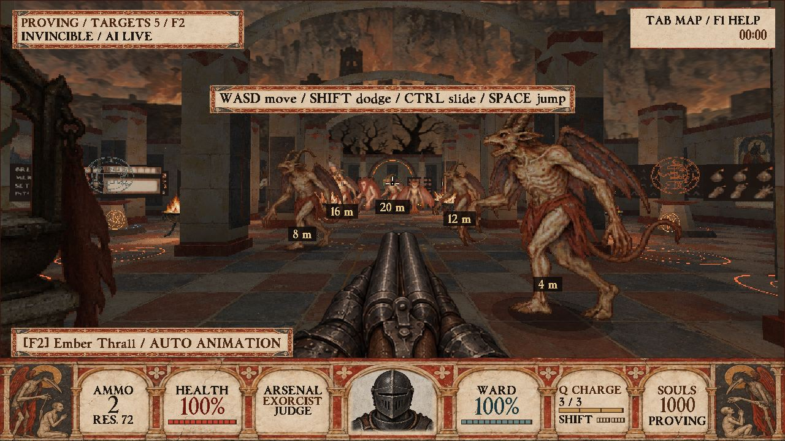
<figcaption><b>Rys. 2.</b> Stacja RANGE na poligonie (F2). Manekiny są prawdziwymi demonami wybranego poziomu, które nie chodzą i nie atakują. Wszystkie liczby, strefy, garda i rzuty ciał działają tak samo jak w walce, więc tu najłatwiej sprawdzić krzywe z rozdziału 3.</figcaption>
</figure>

<section class="col" id="s3">
<h2><span class="n">3</span>Obrażenia</h2>
<p>Obrażenia jednego pocisku (jednej śruciny lub jednej kuli) liczy <code>D.core</code>:</p>
<div class="eq"><div class="tex">\[ D = b \cdot f(d) \cdot w_z \cdot h \cdot \frac{100}{100 + A\,(1-p)} \cdot (1-r) \;-\; \text{soak} \]</div><div class="no">(1)</div></div>
<p>gdzie \(b\) to obrażenia bazowe, \(f(d)\) spadek z odległością, \(w_z\) mnożnik strefy, \(h\) mnożnik głowy broni (tylko dla strefy głowy), \(A\) rating pancerza ciała, \(p\) penetracja broni, \(r\) odporność na typ obrażeń (ograniczona do przedziału \([-0{,}25;\,0{,}60]\)). Odporność typu „immune” usuwa ranę, ale nie usuwa pchnięcia.</p>
<h3><span class="n">3.1</span>Spadek z odległością</h3>
<div class="eq"><div class="tex">\[ f(d) = 1 - (1-f_{\min})\cdot \operatorname{clamp}\!\left(\frac{d-d_0}{d_1-d_0},\,0,\,1\right) \]</div><div class="no">(2)</div></div>
<p>Strzelba (Egzorcysta): \(d_0 = 4\) m, \(d_1 = 18\) m, \(f_{\min} = 0{,}40\). Rewolwer (Sędzia): \(d_0 = 12\) m, \(d_1 = 36\) m, \(f_{\min} = 0{,}65\). Funkcja jest ciągła i nierosnąca. Odległość jest mierzona wzdłuż każdego promienia osobno.</p>
<h3><span class="n">3.2</span>Pancerz jako rating</h3>
<p>Pancerz demona nie jest drugim paskiem zdrowia ani stałym procentem. To rating, który daje malejące korzyści: rating 100 przepuszcza połowę obrażeń, a rating 300 nadal przepuszcza ćwierć. Penetracja zmniejsza rating, a nie obrażenia. Żelazny Niewolnik ma rating 60: strzelba (penetracja 0,10) przechodzi w 64,9%, a rewolwer (0,50) w 76,9%.</p>
</section>

<div class="pair">
<figure class="chart"><div id="fig-falloff"></div>
<div class="legend"><span><i style="background:var(--s2)"></i>Egzorcysta (śrut)</span><span><i style="background:var(--s1)"></i>Sędzia (kula)</span></div>
<figcaption><b>Rys. 3.</b> Spadek mocy \(f(d)\), równanie (2). Strzelba traci moc szybko i poza 24 m nie trafia wcale. Rewolwer zachowuje co najmniej 65% mocy.</figcaption></figure>
<figure class="chart"><div id="fig-armor"></div>
<div class="legend"><span><i style="background:var(--s2)"></i>penetracja 0,10 (śrut)</span><span><i style="background:var(--s1)"></i>penetracja 0,50 (kula)</span><span><i style="background:var(--s4)"></i>penetracja 0,60 (glif Przebicia)</span></div>
<figcaption><b>Rys. 4.</b> Udział obrażeń przechodzących przez pancerz w funkcji ratingu. Punkty: Margrabia (30), Furfur (35), Żelazny Niewolnik (60).</figcaption></figure>
</div>

<section class="col">
<h3><span class="n">3.3</span>Kalibracja: ile trafień zabija</h3>
<p>Tabela podaje obrażenia przy trafieniu w tułów (T) i w głowę (G) oraz liczbę strzałów do zabójstwa. Wiersze strzelby zakładają, że wszystkie 20 śrucin trafia jeden cel, więc to górna granica. Dane pochodzą z <code>DURABILITY-REVIEW.txt</code>.</p>
<div class="tablewrap"><table>
<thead><tr><th>Cel (HP, pancerz)</th><th>Broń, odległość</th><th class="num">D tułów</th><th class="num">D głowa</th><th class="num">strzały T / G</th></tr></thead>
<tbody>
<tr><td>Sługa Żaru (112, 0)</td><td>Egzorcysta 8 m</td><td class="num">198,9</td><td class="num">228,7</td><td class="num">1 / 1</td></tr>
<tr><td></td><td>Sędzia 8 m</td><td class="num">70,0</td><td class="num">94,5</td><td class="num">2 / 2</td></tr>
<tr><td>Akolita Gwiazd (76, 0)</td><td>Sędzia 8 m</td><td class="num">70,0</td><td class="num">94,5</td><td class="num">2 / 1</td></tr>
<tr><td>Ogrodnik Zarazy (150, 0)</td><td>Egzorcysta 16 m</td><td class="num">116,6</td><td class="num">134,1</td><td class="num">2 / 2</td></tr>
<tr><td></td><td>Sędzia 8 m</td><td class="num">70,0</td><td class="num">94,5</td><td class="num">3 / 2</td></tr>
<tr><td>Żelazny Niewolnik (170, 60)</td><td>Egzorcysta 4 m</td><td class="num">155,8</td><td class="num">179,2</td><td class="num">2 / 1</td></tr>
<tr><td></td><td>Sędzia 8 m</td><td class="num">53,9</td><td class="num">72,7</td><td class="num">4 / 3</td></tr>
</tbody></table></div>
<p>Każdy z tych progów jest projektowy i ma margines. Przykład: Akolita (76 HP) ginie od kuli w głowę (94,5), ale nie od kuli w tułów (70). Różnica 6 HP w jedną i 18,5 HP w drugą stronę sprawia, że drobna zmiana odległości nie przewraca wyniku.</p>
</section>

<div class="pair">
<figure>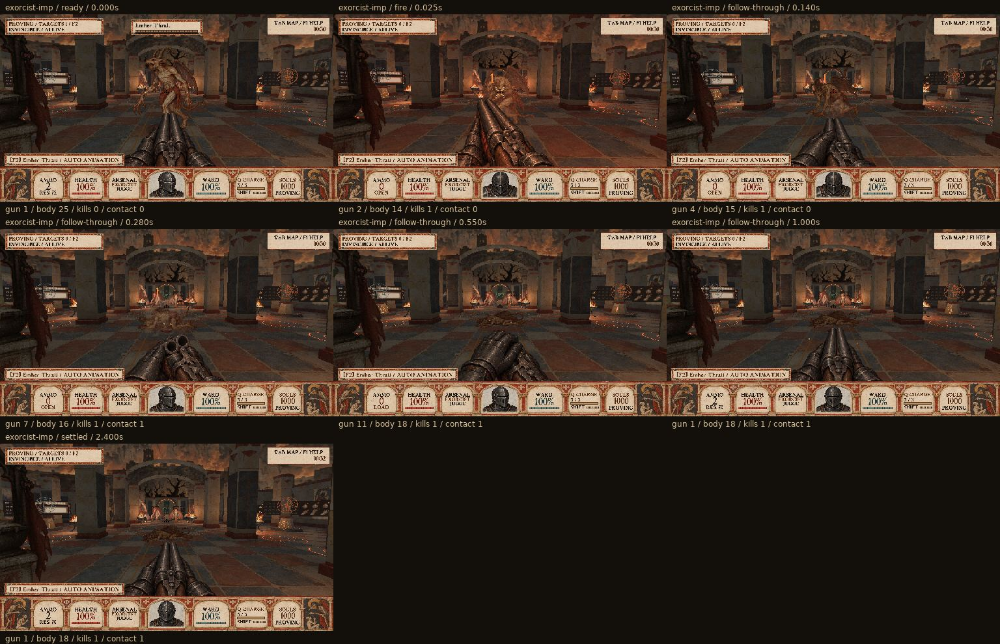
<figcaption><b>Rys. 5.</b> Salwa Egzorcysty w Sługę Żaru, klatki od 0 do 2,4 s. Śrut, garda, rana i rzut ciała są liczone przez równania (1)–(9).</figcaption></figure>
<figure>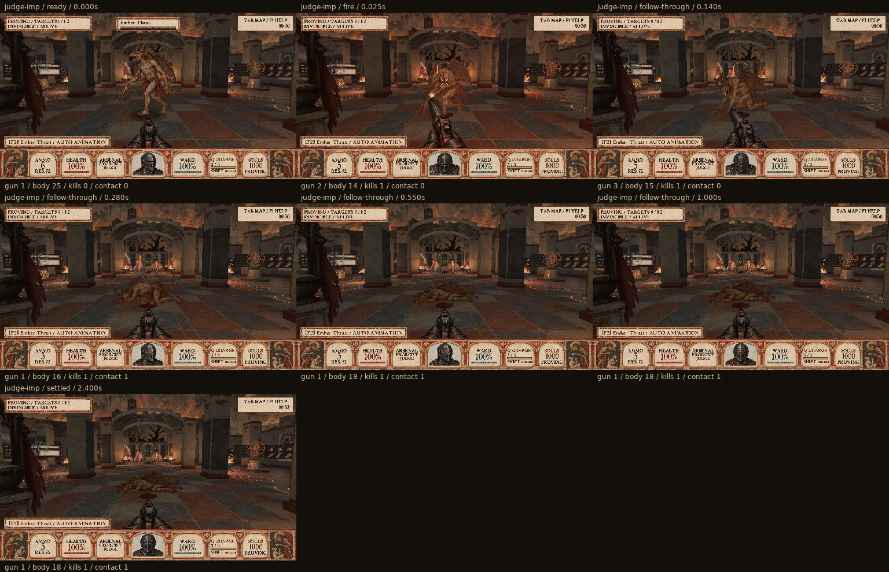
<figcaption><b>Rys. 6.</b> Kula Sędziego w tę samą sylwetkę. Rewolwer zadaje 44 obrażenia gardy, ale pcha z impulsem tylko 25: łamie postawę mocniej, niż odrzuca.</figcaption></figure>
</div>

<section class="col" id="s4">
<h2><span class="n">4</span>Strefy trafień</h2>
<p>Ciało ma trzy strefy (wzór z tabel lokalizacji trafień znanych z Call of Duty). Strefa zmienia ranę i gardę, ale nigdy pchnięcia: cios w nogi wytrąca z równowagi, ale nie odrzuca dalej.</p>
<div class="tablewrap"><table>
<thead><tr><th>Strefa</th><th class="num">rana \(w_z\)</th><th class="num">garda</th><th>Efekt</th></tr></thead>
<tbody>
<tr><td>głowa</td><td class="num">× mnożnik broni (1,15 / 1,35)</td><td class="num">× 1,25</td><td>—</td></tr>
<tr><td>tułów</td><td class="num">× 1</td><td class="num">× 1</td><td>—</td></tr>
<tr><td>nogi</td><td class="num">× 0,80</td><td class="num">× 1,35</td><td><b>okulawienie</b>: obrażenia gardy w nogi ≥ 50% gardy ciała → ruch × 0,65 przez 1,5 s<br><b>podcięcie</b>: ≥ 40 gardy w nogi demona w doskoku, skoku lub szarży → demon leży 0,45 s, boss przerywa szarżę (0,30 s)</td></tr>
</tbody></table></div>
<p>Kula Sędziego w nogi daje \(44 \cdot 1{,}35 = 59{,}4\) obrażeń gardy, więc podcina wszystko, co biegnie. To świadomy wybór: rewolwer ma odpowiedź na szarżę, która nie polega na zabiciu.</p>
</section>

<section class="col" id="s5">
<h2><span class="n">5</span>Prawo impulsu i pęd</h2>
<p>Każde ciało w grze (demon, gracz, zwłoki) dostaje prędkość pchnięcia z jednego prawa. Wcześniej gra miała osobne wzory dla strzelby, rewolweru i gracza oraz twarde ucięcie <code>min(1, impact/110)</code>, które sprawiało, że 20 śrucin pchało tak samo jak 9.</p>
<div class="eq"><div class="tex">\[ v(J, m) = \frac{v_{\max}\left(1 - e^{-J/s}\right)}{m}, \qquad v_{\max} = 6\ \tfrac{\text{m}}{\text{s}},\; s = 120 \]</div><div class="no">(3)</div></div>
<p>\(J\) to impuls ciosu (dla broni pole <code>push</code>, domyślnie równe obrażeniom gardy), \(m\) to masa ciała. Dla małych \(J\) prawo jest prawie liniowe (\(v \approx v_{\max}J/(s\,m)\), czyli klasyczne \(\Delta v = J/m\)), a dla dużych nasyca się miękko. Zawsze rośnie, więc więcej śrucin zawsze pcha mocniej, ale nigdy nie wyrzuca ciała poza mapę.</p>
<h3><span class="n">5.1</span>Sumowanie pędu (nowe w 0.24)</h3>
<p>Dwa szybkie ciosy dodają swoje prędkości wektorowo. Suma jest ograniczona tym samym sufitem co pojedynczy cios:</p>
<div class="eq"><div class="tex">\[ \vec v' = \vec v + v(J,m)\,\hat n, \qquad |\vec v'| \le \max\!\left(v(J,m)\cdot k_{\text{kill}},\ \frac{v_{\max}}{m}\right) \]</div><div class="no">(4)</div></div>
<p>Wcześniej drugi cios u demona nadpisywał pierwszy, a u gracza się sumował. Teraz obie strony używają tej samej funkcji <code>R.addPush</code>. Cios zabijający rzuca ciałem mocniej, \(k_{\text{kill}} = 1{,}35 + 0{,}65\,n\), gdzie \(n = 1 - e^{-J/s}\) to nasycenie ciosu. Nadmiar obrażeń staje się widocznym ciężarem.</p>
<h3><span class="n">5.2</span>Tarcie</h3>
<p>Pchnięcie gaśnie wykładniczo. Całkowanie jest dokładne (<code>Physics.drag</code>):</p>
<div class="eq"><div class="tex">\[ v(t) = v_0 e^{-kt}, \qquad x(t) = \frac{v_0}{k}\left(1 - e^{-kt}\right), \qquad x_\infty = \frac{v_0}{k} \]</div><div class="no">(5)</div></div>
<p>Współczynnik tarcia \(k\) to dana ciała: demon 14 /s, gracz 9 /s na ziemi i 3,5 /s w powietrzu, zwłoki 8 /s na ziemi i 3 /s w locie.</p>
<h3><span class="n">5.3</span>Kontra jako zderzenie pędów (0.24)</h3>
<p>Każdy atak, który przesuwa ciało (doskok, szarża, skok), zapisuje prędkość, z jaką je przesuwa: \(\vec u\). Reguły nie pytają o rodzaj ataku, tylko o tę prędkość, więc nowy atak z ruchem od razu podlega kontrom i podcięciom. Niech \(\hat n\) wskazuje od strzelca do celu. Prędkość zbliżania to \(u_c = \max(0,\ -\vec u\cdot\hat n)\). Kontra zachodzi od \(u_c \ge 0{,}5\) m/s, więc strzał w bok przebiegającego demona kontrą nie jest.</p>
<div class="eq"><div class="tex">\[ \Delta G = \text{impact} + \min\!\left(0{,}6\,P,\ \ 3{,}8\cdot m\cdot u_c\right) \]</div><div class="no">(15)</div></div>
<p>Pęd ciała dolicza się do obrażeń gardy. Limit \(0{,}6\,P\) sprawia, że sam pęd nigdy nie łamie gardy bez celnego trafienia. Pchnięcie dodaje się do prędkości biegu jako wektor:</p>
<div class="eq"><div class="tex">\[ \vec v' = \vec u + v(J,m)\,\hat n, \qquad f = \vec v'\cdot\hat u \;\Rightarrow\; \begin{cases} f \le 0: & \text{pęd zatrzymany, ciało przewrócone, } \vec v' \text{ odrzuca je} \\ f > 0: & \text{bieg zwalnia do } f,\ \text{składowa boczna staje się pchnięciem} \end{cases} \]</div><div class="no">(16)</div></div>
<p>Skok leci dalej po prostu z prędkością \(\vec v'\), więc strzał w twarz skaczącego Sługi skraca jego lot. Przykłady:</p>
<ul>
<li>Sędzia w doskok Sługi (5,8 m/s): garda \(44 + 21{,}6 = 65{,}6\). Stary mnożnik × 1,5 dawał 66, więc kalibracja się zgadza. Doskok zwalnia do 4,67 m/s.</li>
<li>Sędzia w szarżę barkiem Żelaznego (8,5 m/s, m 1,4, hiperpancerz \(P = 72\)): \(44 + 43{,}2 = 87{,}2 \ge 72\), czyli przełamanie i przewrócenie. Ten sam strzał w czasie zamachu nie łamie gardy.</li>
<li>Salwa 9 śrucin w twarz skaczącego Sługi (8 m/s poziomo): ląduje z prędkością 4,44 m/s, czyli bliżej.</li>
<li>Furfur w szarży (12 m/s, m 8,33): kula zwalnia go tylko do 11,86 m/s, ale dodaje 240 gardy (limit \(0{,}6 \cdot 400\)). Dwa trafienia w szarżę łamią gardę bossa.</li>
<li>Okulały Sługa (doskok 2 m/s) trafiony salwą z przyłożenia: pęd odwrócony (\(2 - 5{,}19 < 0\)), Sługa leci do tyłu i ląduje na ziemi.</li>
</ul>
</section>

<figure class="chart"><div id="fig-shove"></div>
<div class="legend"><span><i style="background:var(--s1)"></i>m = 1 (Sługa, Akolita, Ogrodnik)</span><span><i style="background:var(--s3)"></i>m = 1,4 (Żelazny Niewolnik)</span><span><i style="background:var(--s4)"></i>m = 1,5 (gracz-rycerz)</span><span><i style="background:var(--s2)"></i>m = 8,33 (bossowie)</span></div>
<figcaption><b>Rys. 7.</b> Równanie (3) dla czterech mas. Linia przerywana to próg uderzenia o mur (3,2 m/s, rozdz. 6). Sługa uderza o mur od impulsu 91,5 (salwa z co najmniej ok. 8 śrucin), a Żelazny Niewolnik od 164,8. Gracz nie przekracza progu jednym ciosem żadnego demona (szarża Furfura daje mu 2,95 m/s).</figcaption>
</figure>

<section class="col">
<div class="tablewrap"><table>
<thead><tr><th>Cios</th><th class="num">J</th><th class="num">m</th><th class="num">v [m/s]</th><th class="num">droga \(x_\infty\) [m]</th></tr></thead>
<tbody>
<tr><td>Sędzia w Sługę</td><td class="num">25</td><td class="num">1</td><td class="num">1,13</td><td class="num">0,08</td></tr>
<tr><td>Egzorcysta, 9 śrucin</td><td class="num">108</td><td class="num">1</td><td class="num">3,56</td><td class="num">0,25</td></tr>
<tr><td>Egzorcysta z 8 m (ok. 15 śrucin)</td><td class="num">149</td><td class="num">1</td><td class="num">4,27</td><td class="num">0,31</td></tr>
<tr><td>Egzorcysta z przyłożenia (20)</td><td class="num">240</td><td class="num">1</td><td class="num">5,19</td><td class="num">0,37</td></tr>
<tr><td>to samo, cios zabijający</td><td class="num">240</td><td class="num">1</td><td class="num">9,92</td><td class="num">lot + poślizg</td></tr>
<tr><td>pazur Sługi w gracza</td><td class="num">55</td><td class="num">1,5</td><td class="num">1,47</td><td class="num">0,16</td></tr>
<tr><td>skok Sługi w gracza</td><td class="num">80</td><td class="num">1,5</td><td class="num">1,95</td><td class="num">0,22</td></tr>
<tr><td>szarża barkiem Żelaznego (0.24)</td><td class="num">120</td><td class="num">1,5</td><td class="num">2,53</td><td class="num">0,28</td></tr>
<tr><td>szarża Furfura w gracza</td><td class="num">160</td><td class="num">1,5</td><td class="num">2,95</td><td class="num">0,33</td></tr>
</tbody></table></div>
</section>

<section class="col" id="s6">
<h2><span class="n">6</span>Zderzenia, mury i upadek ciał</h2>
<h3><span class="n">6.1</span>Ciało o ciało (domino)</h3>
<p>Zderzenie dwóch ciał jest doskonale niesprężyste w kierunku normalnym. Składowa styczna przetrwa, więc ciało, które zahacza o drugie, ślizga się dalej. Pęd jest zachowany, a energia kinetyczna nigdy nie rośnie (<code>Physics.contact</code>):</p>
<div class="eq"><div class="tex">\[ J_c = \frac{u_{\text{zbl}}}{1/m_1 + 1/m_2}, \qquad \Delta v_2 = \frac{J_c}{m_2}, \qquad u_{\text{zbl}} = (\vec v_1 - \vec v_2)\cdot\hat n \]</div><div class="no">(6)</div></div>
<p>Zderzenie liczy się od prędkości zbliżania 2,6 m/s. Ciało uderzone przyjmuje \(9\,\Delta v_2\) obrażeń gardy, a powyżej 3,2 m/s także ranę:</p>
<div class="eq"><div class="tex">\[ D_{\text{zderz}} = \frac{6\,(\Delta v_2 - 3{,}2)}{\sqrt{m_2}} \]</div><div class="no">(7)</div></div>
<h3><span class="n">6.2</span>Uderzenie o mur</h3>
<p>Ta sama zasada co przy zderzeniu, ale ze światem. Prędkość utracona na murze \(v_\perp\) ponad próg 3,2 m/s staje się raną \(6\,(v_\perp - 3{,}2)/\sqrt m\) i gardą \(16\,(v_\perp - 3{,}2)\). Bossowie tylko się otrząsają. Gracz podlega tej samej regule, ale mur nigdy go nie zabija (zostaje co najmniej 0,5 HP).</p>
<h3><span class="n">6.3</span>Upadek zabitego ciała</h3>
<p>Rzut szybszy niż 3 m/s podnosi zwłoki z ziemi: \(v_y = \min(2{,}4;\ 0{,}22\,v)\). Ciało leci w grawitacji świata \(g = 18{,}5\) m/s² z oporem powietrza, ląduje (jedno odbicie, jeśli uderzenie przekracza 1,6 m/s, ze współczynnikiem 0,22) i ślizga się z tarciem ziemi. Całość jest całkowana w postaci zamkniętej, z dokładnym czasem lądowania:</p>
<div class="eq"><div class="tex">\[ t_{\text{ląd}} = \frac{v_y + \sqrt{v_y^2 + 2 g y}}{g} \]</div><div class="no">(8)</div></div>
</section>

<div class="pair">
<figure>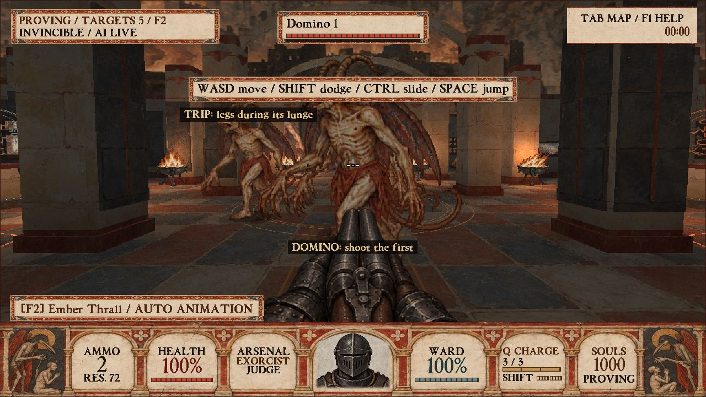
<figcaption><b>Rys. 8.</b> Stacja PHYSICS: rząd trzech manekinów (domino, równania 6–7), manekin przy ścianie (uderzenie o mur) i żywy Sługa do podcięcia w trakcie doskoku.</figcaption></figure>
<figure>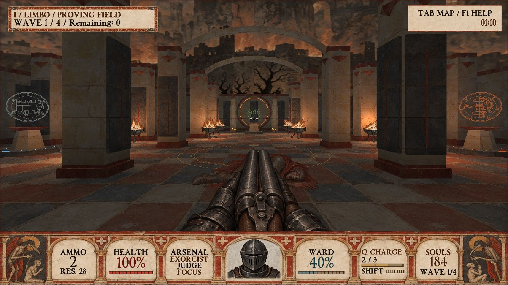
<figcaption><b>Rys. 9.</b> Zwłoki Żelaznego Niewolnika po rzucie zabijającym. Lot, lądowanie i poślizg liczy równanie (8) z tarciem (5).</figcaption></figure>
</div>

<section class="col" id="s7">
<h2><span class="n">7</span>Garda, oszołomienie, bossowie</h2>
<p>Garda (poise) to osobny licznik. Obrażenia gardy z ciosów się sumują, a przekroczenie progu ciała \(P\) wytrąca je z akcji. Od 0.24 utratę równowagi liczy jeden wzór dla każdego ciała: dwa stopnie (lekkie i ciężkie zachwianie, jak w DOOM Eternal) i stabilność ciała \(S\):</p>
<div class="eq"><div class="tex">\[ r = \frac{G-P}{P}, \qquad t = \frac{1}{S}\cdot\begin{cases} a_l + b_l\,r, & r < 1 \ \ \text{(lekkie)}\\ \min\!\big(t_{\max},\ a_h + b_h\,(r-1)\big), & r \ge 1 \ \ \text{(ciężkie)} \end{cases}, \qquad S = \texttt{stability} \text{ lub } \sqrt{m} \]</div><div class="no">(9)</div></div>
<p>Demony (od 0.25): lekkie \(0{,}16 + 0{,}14\,r\), ciężkie \(0{,}36 + 0{,}10\,(r-1)\), najwyżej 0,70 s (w 0.24: \(0{,}10 + 0{,}10\,r\) i \(0{,}30 + 0{,}08\,(r-1)\), maks. 0,60 s). <b>Lekkie zachwianie</b> przerywa atak w miejscu: stopy są zaparte, więc ciało przyjmuje tylko 40% pchnięcia (<code>brace</code>). <b>Ciężkie zachwianie</b> zabiera całe pchnięcie i trwa dłużej. Stabilność: Sługa 1, Żelazny Niewolnik 1,18, gracz 1,22, bossowie 1,5 (wpisana w dane, bo ich masa 8,33 jest umowna). Gracz ma własne stopnie, które po podzieleniu przez \(S\) dają 0,22–0,40 s, i nie zapiera się (<code>brace = 1</code>), bo pchnięcie jest jego informacją zwrotną. Po przełamaniu garda jest zablokowana na 1,15 s i w tym czasie nie przyjmuje żadnych obrażeń. Ciągły ogień nie trzyma więc demona w wiecznym oszołomieniu, a ciosy z blokady nie kumulują się w ciężkie zachwianie. Przewrócenie (podcięcie, kontra) trwa \(0{,}45/S\): Sługa 0,45 s, Żelazny 0,38 s, bossowie 0,30 s.</p>
<div class="tablewrap"><table>
<thead><tr><th>Cios</th><th class="num">r</th><th>Stopień</th><th class="num">t [s]</th></tr></thead>
<tbody>
<tr><td>3 śruciny w Sługę (36 / 36)</td><td class="num">0</td><td>lekkie</td><td class="num">0,16</td></tr>
<tr><td>Sędzia w Sługę (44 / 36)</td><td class="num">0,22</td><td>lekkie</td><td class="num">0,19</td></tr>
<tr><td>Sędzia w Żelaznego w marszu (44 / 36, S 1,18)</td><td class="num">0,22</td><td>lekkie</td><td class="num">0,16</td></tr>
<tr><td>9 śrucin w Sługę (108 / 36)</td><td class="num">2,0</td><td>ciężkie</td><td class="num">0,46</td></tr>
<tr><td>9 śrucin w Żelaznego (108 / 36, S 1,18)</td><td class="num">2,0</td><td>ciężkie</td><td class="num">0,39</td></tr>
<tr><td>salwa z przyłożenia, cel przeżywa (240 / 36)</td><td class="num">5,7</td><td>ciężkie</td><td class="num">0,70</td></tr>
<tr><td>dwie salwy w Margrabiego (480 / 300, S 1,5)</td><td class="num">0,6</td><td>lekkie</td><td class="num">0,16</td></tr>
</tbody></table></div>
<h3><span class="n">7.1</span>Odbudowa gardy</h3>
<p>Wzorem gier Souls garda nie odbudowuje się podczas obrywania. Przez \(\tau\) sekund po ostatnim ciosie nie dzieje się nic, potem licznik spada w tempie \(\rho\) gardy na sekundę:</p>
<div class="eq"><div class="tex">\[ \frac{dG}{dt} = \begin{cases} 0, & t - t_{\text{cios}} < \tau \\ -\rho\,P\cdot c_{\text{zaraza}}, & \text{w przeciwnym razie} \end{cases} \]</div><div class="no">(10)</div></div>
<p>Demony: \(\tau = 1{,}2\) s, \(\rho = 0{,}40\). Gracz: \(\tau = 0{,}5\) s, \(\rho = 0{,}60\). Stanie w zarazie mnoży tempo przez \(c_{\text{zaraza}} = 0{,}5\).</p>
<h3><span class="n">7.2</span>Modyfikatory</h3>
<ul>
<li><b>Kontra</b>: cios w ciało, które pędzi na strzelca, dodaje do gardy jego własny pęd (rozdz. 5.3). Kontra, która przełamie gardę albo odwróci pęd, przewraca ciało.</li>
<li><b>Hiperpancerz</b>: atak może podwoić gardę na czas zamachu i ciosu. Ma go pazur i szarża Żelaznego Niewolnika, czyli \(P = 72\) w ataku.</li>
<li><b>Ciężka rana</b> (z Call of Cthulhu): jedno trafienie, które zabiera co najmniej <code>woundAt</code> zdrowia (40–45%), łamie demona nawet w czasie blokady gardy. Oszołomienie trwa 0,55 s, ruch zwalnia do × 0,72 na 1,6 s, ofiara zatrzymuje się na 0,07 s.</li>
<li><b>Bossowie</b> mają dużą gardę (Margrabia 300, Furfur 400). Przełamanie to <em>zachwianie</em>: pauza z tego samego wzoru (9), która opóźnia rozpoczęty atak, ale nigdy go nie anuluje. Potem 2 s „odsłonięcia” z połową pancerza i 6 s blokady.</li>
</ul>
</section>

<div class="pair">
<figure class="chart"><div id="fig-stagger"></div>
<div class="legend"><span><i style="background:var(--s1)"></i>Sługa (S 1)</span><span><i style="background:var(--s3)"></i>Żelazny (S 1,18)</span><span><i style="background:var(--s4)"></i>gracz (S 1,22)</span><span><i style="background:var(--s2)"></i>boss (S 1,5)</span></div>
<figcaption><b>Rys. 10.</b> Równanie (9). Na osi X zebrana garda podzielona przez gardę ciała. Przy \(G/P = 2\) (\(r = 1\)) lekkie zachwianie przechodzi w ciężkie: czas skacze, a ciało traci zaparcie. Cięższe ciała mają krzywe niżej.</figcaption></figure>
<figure class="chart"><div id="fig-regen"></div>
<div class="legend"><span><i style="background:var(--s1)"></i>Sługa: 30 gardy po ciosie</span><span><i style="background:var(--s4)"></i>gracz: 60 gardy po ciosie</span></div>
<figcaption><b>Rys. 11.</b> Równanie (10): licznik gardy po jednym ciosie w chwili 0. Demon trzyma zebrane obrażenia przez 1,2 s, więc wolno strzelająca broń nadal buduje przełamanie.</figcaption></figure>
</div>

<div class="pair">
<figure>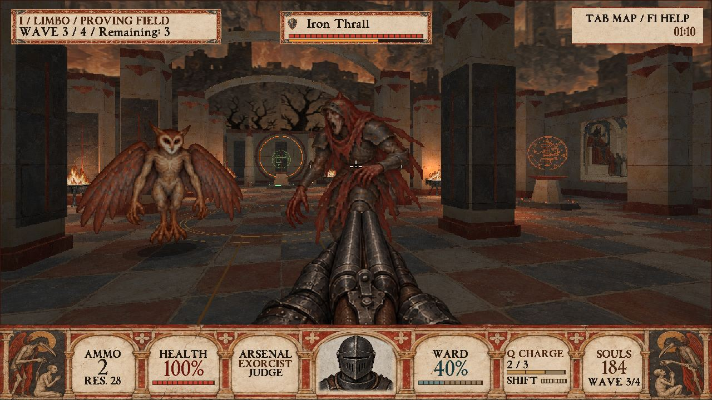
<figcaption><b>Rys. 12.</b> Pasek gardy pod paskiem zdrowia celu (złoty, u góry). Rośnie z ciosami, szarzeje w czasie blokady i pulsuje przy odsłonięciu.</figcaption></figure>
<figure>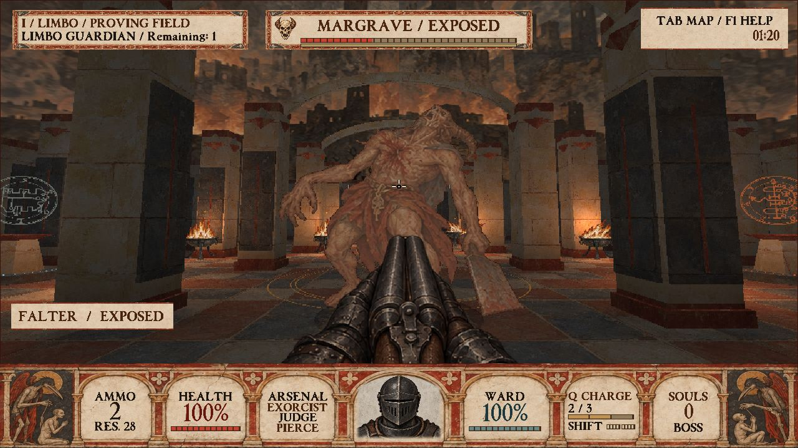
<figcaption><b>Rys. 13.</b> Margrabia po przełamaniu gardy: napis FALTER / EXPOSED i połowa pancerza przez 2 s.</figcaption></figure>
</div>

<section class="col" id="s8">
<h2><span class="n">8</span>Kalkulator trafienia</h2>
<p>Kalkulator liczy pojedyncze trafienie równaniami (1)–(9), (15) i (16) na danych z gry. Garda celu jest na początku pusta. Sprawdziłem go na tabeli z rozdziału 3.3: Sędzia w tułów Żelaznego Niewolnika z 8 m daje 53,85.</p>
</section>

<div class="calc" id="calc">
  <div>
    <label for="c-weapon">Broń</label>
    <select id="c-weapon"><option value="shotgun">Egzorcysta (20 śrucin po 12)</option><option value="judge">Sędzia (kula 70)</option></select>
    <label for="c-target">Cel</label>
    <select id="c-target">
      <option value="imp">Sługa Żaru — 112 HP, pancerz 0, m 1</option>
      <option value="armored">Żelazny Niewolnik — 170 HP, pancerz 60, m 1,4</option>
      <option value="stolas">Akolita Gwiazd — 76 HP, pancerz 0, m 1</option>
      <option value="buer">Ogrodnik Zarazy — 150 HP, pancerz 0, m 1</option>
      <option value="boss">Margrabia Popiołu — 1000 HP, pancerz 30, m 8,33</option>
    </select>
    <label for="c-zone">Strefa</label>
    <select id="c-zone"><option value="torso">tułów</option><option value="head">głowa</option><option value="lower">nogi</option></select>
    <label for="c-dist">Odległość: <output id="o-dist">8 m</output></label>
    <input id="c-dist" type="range" min="1" max="36" step="0.5" value="8">
    <label for="c-pellets">Trafione śruciny: <output id="o-pellets">20</output></label>
    <input id="c-pellets" type="range" min="1" max="20" step="1" value="20">
    <label for="c-rush">Stan celu</label>
    <select id="c-rush"><option value="idle">idzie / stoi</option><option value="rush">pędzi na gracza (doskok 5,8 / szarża 8,5 m/s)</option></select>
  </div>
  <dl class="res" id="c-out" aria-live="polite"></dl>
</div>

<section class="col" id="s9">
<h2><span class="n">9</span>Ruch demonów i balistyka</h2>
<h3><span class="n">9.1</span>Chód jako fizyka</h3>
<p>Demon przyspiesza do prędkości marszu z przyspieszeniem zależnym od masy i hamuje dwa razy szybciej:</p>
<div class="eq"><div class="tex">\[ a = \frac{a_0}{\sqrt{m}}, \qquad a_{\text{ham}} = 2a \]</div><div class="no">(11)</div></div>
<p>Sługa (\(a_0 = 18\), m 1) osiąga 4 m/s po 0,22 s. Żelazny Niewolnik (12, m 1,4) osiąga 3 m/s po 0,30 s. Bossowie (8, m 8,33) potrzebują około 0,8 s. Ciężkie ciała ruszają i skręcają później, co widać, i to daje graczowi okno. Każdy demon, nawet na poziomie 5, jest wolniejszy od biegnącego gracza (5,25 m/s).</p>
<h3><span class="n">9.2</span>Skok Sługi</h3>
<p>Skok to łuk balistyczny w grawitacji świata. Wierzchołek \(h = 1\) m:</p>
<div class="eq"><div class="tex">\[ v_y = \sqrt{2gh} = 6{,}08\ \tfrac{\text{m}}{\text{s}}, \qquad T = \frac{2v_y}{g} = 0{,}66\ \text{s}, \qquad v_{xz} = \min\!\left(11,\ \frac{d}{T}\right) \]</div><div class="no">(12)</div></div>
<p>Punkt lądowania przewiduje ruch gracza: \(\vec p + \lambda\,\vec v_{\text{gracz}}(t_{\text{zamach}} + T)\), gdzie \(\lambda\) rośnie od 0,6 na poziomie 1 do 1. Jeśli przewidziany punkt jest w murze, wyprzedzenie spada o połowę, aż punkt będzie wolny. Punkt lądowania jest zaznaczony na posadzce od początku przysiadu, więc zmiana kierunku albo unik nadal ratuje.</p>
<p class="note">Poprawka do dokumentu 0.21: tam podano lot około 0,46 s, co odpowiada wierzchołkowi 0,5 m. Obecne dane (1 m) dają 0,66 s. Przy 7,5 m pozioma prędkość osiąga limit 11 m/s, więc najdłuższy skok kończy się po 7,2 m.</p>
<h3><span class="n">9.3</span>Wyprzedzanie celu pociskiem</h3>
<p>Akolita (udział 0,85) i Margrabia (0,5) liczą punkt przecięcia z ruchem gracza w dwóch iteracjach czasu lotu: \(t_1 = |\vec p - \vec e|/v_b\), \(\vec q = \vec p + \lambda \vec v_p (t_{\text{zamach}} + t_1)\), potem \(t_2 = |\vec q - \vec e|/v_b\). Pocisk Akolity leci 7 m/s, czyli szybciej niż biegnący gracz. Sam ruch w bok już nie wystarcza, zmiana kierunku tak.</p>
<h3><span class="n">9.4</span>Szarża</h3>
<p>Szarża jedzie po prostej z prędkością \(v_c\) przez \(t_c = \operatorname{clamp}(d/v_c + 0{,}08,\ t_{\min},\ t_{\max})\). Gdy mur zatrzyma ciało, szarża kończy się od razu (w 0.24 z głuchym łomotem). Nowa szarża barkiem Żelaznego Niewolnika: 3–7 m, zamach 0,8 s, 8,5 m/s, 20 obrażeń i 120 gardy, hiperpancerz × 2, odnowienie 4,5 s.</p>
</section>

<div class="pair">
<figure>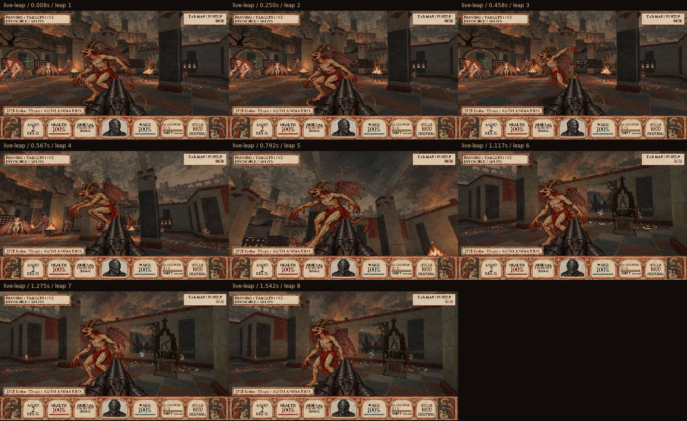
<figcaption><b>Rys. 14.</b> Skok Sługi uruchomiony przez prawdziwe AI: przysiad, wybicie, lot, lądowanie. Klatki grafiki są wybierane ze stanu symulacji (faza zamachu, \(v_y\) lotu), a nie z osobnego zegara.</figcaption></figure>
<figure>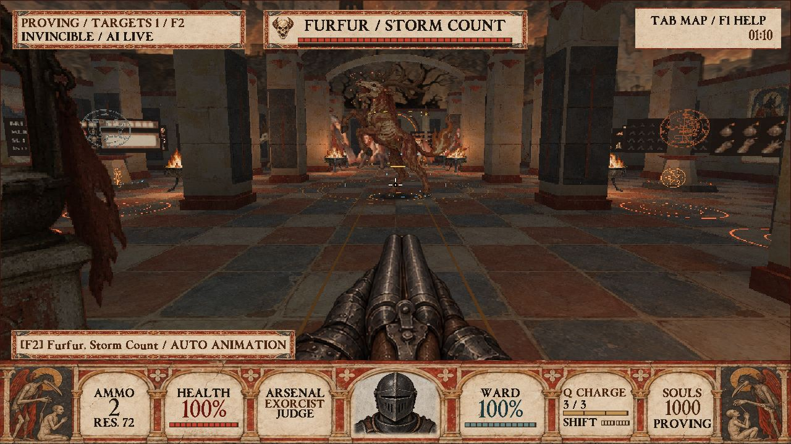
<figcaption><b>Rys. 15.</b> Zapowiedź szarży Furfura (12 m/s). Linie na posadzce pokazują tor, a strzał w nogi ≥ 40 gardy przerywa szarżę.</figcaption></figure>
</div>

<section class="col" id="s10">
<h2><span class="n">10</span>Logika ataku (AI)</h2>
<p>Każdy demon to automat stanów. Przejścia zależą od danych ataku (zasięg, zamach, odnowienie) i od widoczności celu.</p>
</section>

<figure>
<pre class="mermaid">
stateDiagram-v2
  [*] --> idle
  idle --> move: widzi lub pamięta gracza
  move --> windup: atak pasuje (zasięg, odnowienie, wolny token)
  windup --> strike: cel widoczny
  windup --> recover: cel zniknął za murem (przerwa 1,2 s, zmiana strony)
  strike --> recover: koniec ciosu lub lądowanie
  recover --> move: odpoczynek minął
  move --> hurt: przełamana garda / rana / podcięcie
  windup --> hurt: przełamana garda
  strike --> hurt: przełamana garda
  hurt --> move: koniec oszołomienia (0,35 s powrotu)
</pre>
<figcaption><b>Rys. 16.</b> Automat stanów demona. Zmiana z 0.24: przerwany zamach kończy się przerwą i zmianą strony okrążania, a nie natychmiastowym nowym zamachem.</figcaption>
</figure>

<section class="col">
<h3><span class="n">10.1</span>Tokeny ataku</h3>
<p>Naraz może atakować tylko kilka demonów (2/2/3/3/4 zależnie od poziomu, bossowie 1), a kolejne ataki są rozsunięte o co najmniej \(0{,}24/\text{tempo}\) s. Reszta okrąża gracza i czeka. To samo rozwiązanie stosują strzelanki id Software: gracz widzi tłum, ale cios przychodzi z jednej, dwóch stron naraz.</p>
<h3><span class="n">10.2</span>Zapętlanie ataków: diagnoza i poprawka (0.24)</h3>
<p>Audyt AI wykazał pętlę. Demon zaczynał zamach na zapamiętany punkt, gracz chował się za filarem, zamach był anulowany, a demon od razu zaczynał następny. Poprawki:</p>
<ol>
<li>Początek ataku celuje w gracza, jeśli zapamiętany punkt jest za murem.</li>
<li>Przy zwolnieniu ataku dystansowego cel jest odświeżany, jeśli gracz jest widoczny, a stary punkt nie.</li>
<li>Przerwany atak kończy się przerwą 1,2 s (dzieloną przez tempo poziomu), zmianą strony okrążania i nową decyzją za 1,25 s.</li>
<li>Demon wciśnięty w gracza (poniżej 1,25 m) robi krok w bok zamiast stać.</li>
<li>Żelazny Niewolnik dostał szarżę barkiem. Bez niej przy krążącym graczu nie atakował wcale.</li>
</ol>
<div class="tablewrap"><table>
<caption class="meta" style="caption-side:bottom;text-align:left;padding-top:6px">Tabela 9. Audyt AI, 60 s, gracz nieśmiertelny i nie strzela; 2× Sługa, Żelazny, Akolita, Ogrodnik.</caption>
<thead><tr><th>Scenariusz</th><th>Miara</th><th class="num">przed 0.24</th><th class="num">po 0.24</th></tr></thead>
<tbody>
<tr><td>gracz krąży</td><td>anulowane zamachy Sług</td><td class="num">8</td><td class="num">0</td></tr>
<tr><td>gracz krąży</td><td>ataki Żelaznego Niewolnika</td><td class="num">0</td><td class="num">7</td></tr>
<tr><td>gracz stoi</td><td>czas utknięcia (Sługa / Żelazny)</td><td class="num">2,7 / 2,5 s</td><td class="num">0 / 0 s</td></tr>
<tr><td>gracz stoi</td><td>zamachy → ciosy (Sługa)</td><td class="num">56 → 56</td><td class="num">54 → 53</td></tr>
<tr><td>gracz krąży</td><td>anulowane zamachy Akolity</td><td class="num">—</td><td class="num">1</td></tr>
</tbody></table></div>
<h3><span class="n">10.3</span>Unik Akolity</h3>
<p>Od poziomu 2 Akolita odskakuje w bok (6,5 m/s przez 0,24 s, odnowienie 3,5 s dzielone przez tempo), gdy celownik spoczywa na nim w stożku 0,06 rad z mniej niż 16 m. Halo zrobiło z tego znak rozpoznawczy swoich Elit: wróg, który reaguje na celowanie, wydaje się żywy.</p>
</section>

<div class="pair">
<figure>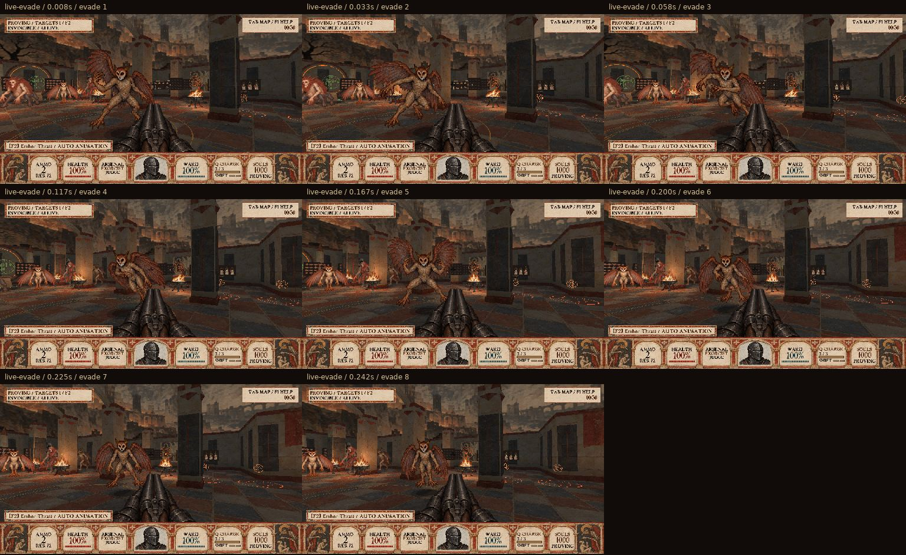
<figcaption><b>Rys. 17.</b> Unik Akolity uruchomiony przez prawdziwe AI. Kierunek odbicia grafiki wynika ze strony uniku w symulacji.</figcaption></figure>
<figure>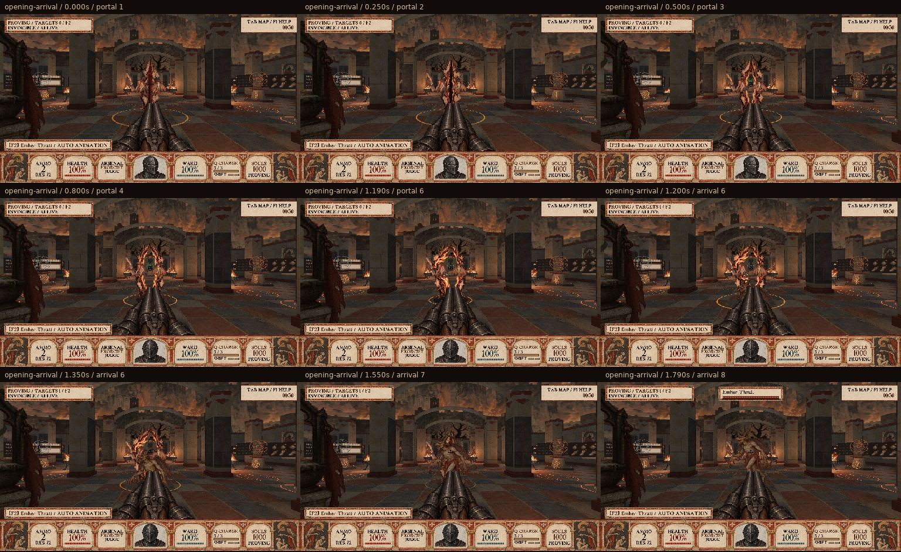
<figcaption><b>Rys. 18.</b> Portal: 1,2 s zapowiedzi i 0,6 s narodzin. Klatka atlasu wynika z postępu \(1 - \text{delay}/\text{maxDelay}\), więc grafika nigdy nie przesuwa zegara gry. Kolor mówi, co nadchodzi.</figcaption></figure>
</div>

<section class="col" id="s11">
<h2><span class="n">11</span>Poziomy trudności</h2>
<p>Poziom \(t\) (numer fali albo pokrętło TIER na poligonie) skaluje demona przy narodzinach, jak współczynnik trudności w Risk of Rain 2. Przy \(k = t - 1\):</p>
<div class="eq"><div class="tex">\[ v' = v(1 + 0{,}05k),\quad D' = D(1 + 0{,}08k),\quad HP' = \lfloor HP(1 + 0{,}06k) + 0{,}5 \rfloor,\quad T'_{\text{odp}} = \frac{T_{\text{odp}}}{1 + 0{,}12k} \]</div><div class="no">(13)</div></div>
<p>Zasada nadrzędna: <b>zapowiedzi ataków nigdy się nie skracają</b>. Agresja skraca przerwy między atakami i odnowienia, ale nigdy zamachu. Trudność rośnie przez to, ilu demonów atakuje naraz i jak dobrze celują, a nie przez to, że gracz nie zdąży zareagować.</p>
</section>

<figure class="chart"><div id="fig-tier"></div>
<div class="legend"><span><i style="background:var(--s1)"></i>prędkość Sługi [m/s]</span><span><i style="background:var(--s2)"></i>obrażenia pazura</span><span><i style="background:var(--s3)"></i>zdrowie / 10</span><span><i style="background:var(--s4)"></i>tempo × 10</span></div>
<figcaption><b>Rys. 19.</b> Równanie (13) dla Sługi Żaru. Na poziomie 5 Sługa biegnie 4,8 m/s (nadal wolniej niż gracz), drapie za 19,8 i ma 139 HP. Liczba atakujących naraz rośnie 2 → 4, a wyprzedzanie celu 0 → 1.</figcaption>
</figure>

<section class="col" id="s12">
<h2><span class="n">12</span>Gracz-rycerz</h2>
<p>Gracz to ciało z tymi samymi regułami: masa 1,5 (zbroja), garda 70, próg rany 30%, tarcie 9 /s. Jedynym specjalnym elementem jest tarcza (WARD), czyli zużywalna pula, która przechwytuje 55% każdego ciosu, dopóki się nie wyczerpie:</p>
<div class="eq"><div class="tex">\[ D_{\text{tarcza}} = \min(W,\ 0{,}55\,D), \qquad D_{\text{HP}} = \min(HP,\ D - D_{\text{tarcza}}) \]</div><div class="no">(14)</div></div>
<p>W 0.24 udział 0,55, nietykalność po ciosie (0,32 s) i w uniku (0,20 s) oraz tarcie są danymi ciała, a nie liczbami w kodzie.</p>
<div class="tablewrap"><table>
<thead><tr><th>Ruch</th><th>Dane</th><th>Wynik</th></tr></thead>
<tbody>
<tr><td>bieg</td><td>5,25 m/s, przyspieszenie 68, hamowanie 82 m/s²</td><td>pełna prędkość po 0,08 s</td></tr>
<tr><td>skok</td><td>5,5 m/s w grawitacji 18,5</td><td>wysokość 0,82 m, lot 0,59 s</td></tr>
<tr><td>powietrze</td><td>sterowanie 22 m/s², 6,1 m/s; pęd do 7,2 m/s</td><td>nadwyżka zanika miękko (półtrwanie ok. 0,43 s)</td></tr>
<tr><td>ślizg</td><td>8,7 m/s przez 0,52 s, odnowienie 0,85 s</td><td>skok ze ślizgu zachowuje pęd</td></tr>
<tr><td>unik</td><td>16 m/s przez 0,155 s, ładowanie 0,78 s</td><td>2,48 m, nietykalność 0,20 s</td></tr>
<tr><td>pchnięcie (DI)</td><td>kierowanie przeciw pchnięciu</td><td>hamuje je do 1,8× szybciej</td></tr>
</tbody></table></div>
</section>

<section class="col" id="s13">
<h2><span class="n">13</span>Jak to robią najlepsi</h2>
<p>Poniżej zestawiam ogólnie znane rozwiązania z gier referencyjnych z tym, co ma SIGIL. Ocena: <span class="tag ok">mamy</span> to rozwiązanie albo jego odpowiednik, <span class="tag mid">częściowo</span> mamy tylko część, <span class="tag bad">brak</span> nie mamy go wcale.</p>
</section>
<div class="tablewrap"><table>
<thead><tr><th>Gra</th><th>Rozwiązanie</th><th>SIGIL: BREACH</th><th>Ocena</th></tr></thead>
<tbody>
<tr><td>DOOM 2016 / Eternal</td><td>Stopnie zachwiania zależne od siły ciosu; demon w stanie zachwiania można dobić</td><td>Dwa stopnie zachwiania i stabilność ciała (9), zachwianie bossa, kontra jako zderzenie pędów. Brak dobicia oszołomionego demona.</td><td><span class="tag mid">częściowo</span></td></tr>
<tr><td>DOOM Eternal</td><td>Pętla zasobów „idź do przodu”: piła daje amunicję, dobicie zdrowie, płomień pancerz</td><td>Od 0.24 zabójstwo przełamanego demona leczy (15.1). Zabójstwo daje też 4 naboje.</td><td><span class="tag ok">mamy</span></td></tr>
<tr><td>DOOM Eternal</td><td>Słabe punkty (zniszczalne działa, pancerz)</td><td>Strefy głowa, tułów, nogi. Od 0.24 bossowie mają nieopancerzoną czaszkę (15.7).</td><td><span class="tag ok">mamy</span></td></tr>
<tr><td>Gry id Software</td><td>Ograniczenie liczby jednocześnie atakujących (tokeny)</td><td>2–4 atakujących, rozstęp 0,24 s</td><td><span class="tag ok">mamy</span></td></tr>
<tr><td>Dark Souls / Elden Ring</td><td>Poise, hiperpancerz, odbudowa po opóźnieniu</td><td>Równanie (10), hiperpancerz × 2</td><td><span class="tag ok">mamy</span></td></tr>
<tr><td>Sekiro</td><td>Postawa odbudowuje się wolniej, gdy wróg ma mało zdrowia; aktywne odbicie ciosu</td><td>Od 0.24 odbudowa gardy zależy od zdrowia (15.4), a idealny unik oddaje cios napastnikowi (15.3). Nie ma osobnego parowania.</td><td><span class="tag mid">częściowo</span></td></tr>
<tr><td>Call of Duty</td><td>Tabela mnożników lokalizacji trafień, przebicie</td><td>Trzy strefy, przebicie Sędziego (2 ciała, 62% mocy)</td><td><span class="tag ok">mamy</span></td></tr>
<tr><td>Halo</td><td>Wrogowie reagują na celowanie i granaty; zasada „30 sekund zabawy”</td><td>Unik Akolity. Pozostałe demony nie reagują na celowanie ani na ładunek prochowy.</td><td><span class="tag mid">częściowo</span></td></tr>
<tr><td>F.E.A.R.</td><td>Planowanie celów (GOAP), oddział, flankowanie, osłony</td><td>Automat stanów, okrążanie, stada z portali poza polem widzenia. Brak osłon i komunikacji między demonami.</td><td><span class="tag mid">częściowo</span></td></tr>
<tr><td>Half-Life 2</td><td>Obrażenia z pędu obiektów</td><td>Domino i mury, równania (6)–(7)</td><td><span class="tag ok">mamy</span></td></tr>
<tr><td>Left 4 Dead</td><td>Reżyser AI: tempo walki zależne od stanu gracza</td><td>Od 0.24 prosty reżyser: tempo stad i limit żywych zależą od obrażeń przyjętych przez gracza (15.2)</td><td><span class="tag ok">mamy</span></td></tr>
<tr><td>Risk of Rain 2</td><td>Współczynnik trudności skalujący wrogów</td><td>Równanie (13) z zasadą stałych zapowiedzi</td><td><span class="tag ok">mamy</span></td></tr>
<tr><td>ULTRAKILL</td><td>Zatrzymanie klatki, parowanie pocisków, zdrowie z bliskości</td><td>Zatrzymanie ofiary (0,025–0,07 s), puls ramki, zamrożenie demonów po idealnym uniku, zdrowie za zabójstwo przełamanego. Brak parowania pocisków.</td><td><span class="tag mid">częściowo</span></td></tr>
<tr><td>Titanfall / Apex</td><td>Zachowanie pędu przy ślizgu i skoku</td><td>Skok ze ślizgu bez ścięcia, miękki pułap 7,2 m/s</td><td><span class="tag ok">mamy</span></td></tr>
<tr><td>Strzelanki rywalizacyjne</td><td>Stały krok symulacji, deterministyczny wzór śrutu</td><td>120 Hz, całkowanie analityczne, stały wzór śrutu, ziarno losowości</td><td><span class="tag ok">mamy</span></td></tr>
</tbody></table></div>

<section class="col">
<p><b>Ocena ogólna.</b> Pod względem spójności rdzeń jest na poziomie dobrych gier akcji. Jedno prawo impulsu, rozdzielone kanały zdrowia, gardy i pchnięcia, garda z opóźnioną odbudową i dokładne całkowanie fizyki to rozwiązania, które w wielu grach są rozproszone po specjalnych przypadkach. Słabsza jest warstwa <em>pętli rozgrywki</em>: model mówi, co się dzieje po trafieniu, ale jeszcze nie nagradza gracza za grę agresywną ani nie dopasowuje tempa walki do gracza. To najczęstsze źródło wrażenia „dobrze działa, ale brakuje wyzwania”.</p>
</section>

<section class="col" id="s14">
<h2><span class="n">14</span>Ocena propozycji Gemini</h2>
<p>Gemini zaproponował siedem grup zmian. Każdą sprawdziłem na kodzie przed wdrożeniem. Zasady były trafne. Trzy twierdzenia o naszym kodzie okazały się błędne, a jeden parametr był zbyt surowy.</p>
</section>
<div class="tablewrap"><table>
<thead><tr><th>Propozycja</th><th>Werdykt</th><th>Uzasadnienie</th></tr></thead>
<tbody>
<tr><td>Jedno prawo \(\Delta v = J/m\) z miękkim nasyceniem</td><td><span class="tag ok">wdrożone 0.20</span></td><td>Równanie (3). Usunięte osobne wzory i twarde ucięcie przy 110.</td></tr>
<tr><td>Rozdzielenie gardy i impulsu w danych broni</td><td><span class="tag ok">wdrożone 0.20</span></td><td>Sędzia: garda 44, pchnięcie 25.</td></tr>
<tr><td>Gracz pod tym samym prawem</td><td><span class="tag ok">wdrożone 0.20</span></td><td>Masa rycerza 1,5. W 0.24 także to samo sumowanie pędu.</td></tr>
<tr><td>Oszołomienie z nadwyżki gardy</td><td><span class="tag ok">wdrożone 0.20</span></td><td>Równanie (9). Gracz ma własne granice 0,22–0,40 s.</td></tr>
<tr><td>Odbudowa gardy: opóźnienie 1,5 s + 40%/s dla wszystkich</td><td><span class="tag mid">zmienione</span></td><td>Dla gracza 1,5 s było za surowe: pojedynczy Sługa łamałby gardę co drugi pazur. Ta sama reguła, inne dane ciała (0,5 s, 60%).</td></tr>
<tr><td>Bossowie z gardą i krótkim zachwianiem</td><td><span class="tag ok">wdrożone</span></td><td>Zachwianie 0,15 s, odsłonięcie 2 s, blokada 6 s.</td></tr>
<tr><td>„0,2 HP przy 12,05 m decyduje o ranie”</td><td><span class="tag bad">błędna teza</span></td><td>Spadek z odległością tylko zmniejsza obrażenia, więc kula w tułów nigdy nie raniła. Prawdziwy problem to kruchy próg przy przyszłym strojeniu. Próg ustawiony jawnie z marginesem.</td></tr>
<tr><td>Strefy głowa, tułów, nogi i okulawienie</td><td><span class="tag ok">wdrożone</span></td><td>Rozdział 4.</td></tr>
<tr><td>Nogi „× 1,35 impulsu”</td><td><span class="tag mid">zmienione</span></td><td>× 1,35 gardy, nie pchnięcia: noga wytrąca z równowagi, ale nie odrzuca dalej.</td></tr>
<tr><td>Głowa „pełna penetracja pancerza”</td><td><span class="tag bad">odrzucone</span></td><td>Zniosłoby tożsamość Żelaznego Niewolnika. Głowa ma już × 1,35 rany i × 1,25 gardy.</td></tr>
<tr><td>„Szarża ma grawitację 12”</td><td><span class="tag bad">błędna teza</span></td><td>12 miał ładunek prochowy, nie szarża. Poprawiony ładunek, rzut przeskalowany \(\sqrt{18{,}5/12}\).</td></tr>
<tr><td>Kontra pęd na pęd</td><td><span class="tag ok">wdrożone dosłownie 0.24</span></td><td>W 0.20 jako reguła × 1,5. Od 0.24 to prawdziwe zderzenie: pęd ciała dolicza się do gardy, a pchnięcie dodaje się wektorowo do biegu, równania (15)–(16).</td></tr>
<tr><td>Lekkie i ciężkie zachwianie</td><td><span class="tag ok">wdrożone 0.24</span></td><td>W 0.20 jedna płynna skala. Od 0.24 dwa stopnie: zaparcie przy lekkim, pełny odrzut przy ciężkim, czas dzielony przez stabilność ciała, równanie (9).</td></tr>
<tr><td>Domino: ciało wbite w ciało rani</td><td><span class="tag ok">wdrożone</span></td><td>Równania (6)–(7).</td></tr>
<tr><td>Skok ze ślizgu bez ścięcia prędkości</td><td><span class="tag ok">wdrożone</span></td><td>Miękkie wygaszanie nadwyżki.</td></tr>
<tr><td>„Odrzut blokuje WASD”, dodać DI</td><td><span class="tag mid">błędna teza, DI dodane</span></td><td>Pchnięcie już się dodawało do ruchu. Dodany tylko wpływ kierunkowy.</td></tr>
<tr><td>Mikro-zatrzymanie przy ranie i uderzeniu o mur</td><td><span class="tag ok">wdrożone</span></td><td>Zatrzymanie ofiary 0,07 s, puls ramki.</td></tr>
</tbody></table></div>
<section class="col">
<p><b>Ocena listy:</b> zasady projektowe dobre (mniej więcej 8/10), zgodność z naszym kodem słabsza (około 6/10), bo część uwag opisywała kod, którego Gemini nie widział dokładnie. Lista była wartościowa jako kierunek, a nie jako specyfikacja do wklejenia. Po 0.24 nie zostało z niej nic niewdrożonego. Pozostałe różnice to świadome zmiany opisane w tabeli.</p>
</section>

<section class="col" id="s15">
<h2><span class="n">15</span>Braki z pierwszej wersji tego dokumentu i ich wdrożenie</h2>
<p>Pierwsza wersja dokumentu wymieniała osiem braków. Wszystkie są już w grze. Każdy to dane plus jedna funkcja i każdy ma test.</p>
<h3><span class="n">15.1</span>Pętla zasobów: zabójstwo przełamanego demona leczy</h3>
<p>Demon zabity, gdy był wytrącony z równowagi (zachwiany, przewrócony albo odsłonięty), leczy rycerza o \(0{,}25\,P\) swojej gardy: Sługa 9, Akolita 7,5, Ogrodnik 12,5. Ekran pokazuje BREAK KILL i daje krótki puls ramki. Najpierw trzeba przełamać, potem zabić, więc rewolwer (łamie) i strzelba (zabija) tworzą parę, a gra nagradza podchodzenie, jak dobicia w DOOM. Od 0.25 liczy się też demon, który w ciągu ostatnich 2 s miał przełamaną gardę, upadł albo dostał ciężką ranę, nawet jeśli zdążył już wstać. Bez tego okna strzelba zabijała, zanim przełamanie miało znaczenie: modele człowieka miały 3% zabójstw po przełamaniu, z oknem mają 11–16%.</p>
<h3><span class="n">15.2</span>Reżyser tempa walki</h3>
<p>Napięcie \(I\) to obrażenia przyjęte przez gracza, gasnące ze stałą \(\tau = 8\) s. Stres \(s = I/30\). Przerwa między stadami jest mnożona przez \(0{,}6 + 1{,}0\cdot\min(1, s)\): gracz, którego nikt nie rani, dostaje kolejne stado o 40% szybciej, a przyciśnięty dostaje 60% oddechu. Spokojny i zdrowy gracz (stres poniżej 0,25, zdrowie co najmniej 70%) ma jednego demona więcej naraz. Zapowiedź portalu (1,2 s) nigdy się nie skraca.</p>
<div class="eq"><div class="tex">\[ I(t) = \sum_i D_i\,e^{-(t-t_i)/\tau}, \qquad T_{\text{przerwa}}' = T_{\text{przerwa}}\cdot\big(0{,}6 + 1{,}0\cdot\min(1,\ I/30)\big) \]</div><div class="no">(17)</div></div>
<h3><span class="n">15.3</span>Aktywna obrona: idealny unik</h3>
<p>Cios, który trafia rycerza w trakcie samego uniku (0,155 s, nie w późniejszej nietykalności), to idealny unik. Raz na unik: ładunek uniku wraca, demony zamierają na 0,25 s, a napastnik w zasięgu 3,5 m dostaje własny cios na gardę. Pazur Sługi (55) łamie jego gardę 36. Nie trzeba nowego klawisza, a reguła jest tą samą zasadą co kontra: cios wraca do tego, kto go zadał. Od 0.25 unik zostawia powidok w miejscu, z którego się zaczął: pazur, szarża, lądowanie skoku, pocisk albo piorun, który w czasie uniku trafiłby ten powidok, też jest idealnym unikiem. Wcześniej unik (2,5 m w 0,155 s) wynosił rycerza poza zasięg, zanim cios dotarł, więc idealny unik prawie się nie zdarzał (0 w botach, teraz 1,2 na przebieg u wprawnych).</p>
<h3><span class="n">15.4</span>Postawa zależna od zdrowia</h3>
<p>Jak w Sekiro: tempo odbudowy gardy jest mnożone przez \(0{,}5 + 0{,}5\,HP/HP_{\max}\). Demon na połowie zdrowia odbudowuje gardę w 75% tempa, więc rany i przełamania się wspierają. To samo dotyczy gracza.</p>
<h3><span class="n">15.5</span>Gracz wbity w mur</h3>
<p>Szarża Furfura ma impuls pchnięcia 230: \(v = 6(1-e^{-230/120})/1{,}5 = 3{,}41\) m/s, czyli powyżej progu muru 3,2 m/s. Uderzenie o mur rani gracza tą samą regułą co demony i nigdy go nie zabija. Uniknięcie szarży ma teraz znaczenie przestrzenne: nie stój plecami do ściany.</p>
<h3><span class="n">15.6</span>Ogień</h3>
<p>Ładunek prochowy zadaje obrażenia od ognia. Ogień nie trafia na rating pancerza (pancerz liczy się tylko dla obrażeń fizycznych), więc ładunek jest odpowiedzią na Żelaznego Niewolnika. Ogrodnik Zarazy jest na ogień podatny (−25%), a Margrabia Popiołu odporny (40%).</p>
<h3><span class="n">15.7</span>Słabe punkty bossów</h3>
<p>Margrabia: głowa 0, tułów 30, nogi 45. Furfur: głowa 0, tułów 35, nogi 50. Strzał w tułów liczy się jak wcześniej, a celny strzał w czaszkę omija pancerz. Kod obsługiwał pancerz per strefa od dawna, brakowało tylko danych.</p>
<h3><span class="n">15.8</span>Pomiary w zwykłej grze</h3>
<p>Moduł <code>combat/telemetry.lua</code> liczy to samo w grze i w botach (rozdz. 15.9). Po ukończeniu próby fal na poligonie wynik pokazuje się na ekranie, a pełny zapis trafia do pliku <code>telemetry.txt</code> w folderze zapisu gry. Ekran śmierci na poligonie pokazuje czas kontroli.</p>
<h3><span class="n">15.9</span>Co znaczy „za mocne”: definicje pomiarów</h3>
<p>Siła mechaniki to trzy liczby, a nie odczucie:</p>
<ul>
<li><b>Czas kontroli</b>: jaki procent życia demonów mija, gdy nie mogą działać (oszołomione, zachwiane, przewrócone). Blisko 0% oznacza, że demony nigdy nie są przerywane. Wysoki wynik (powyżej około 30%) oznacza, że gracz trzyma je w miejscu i walka przestaje być groźna.</li>
<li><b>Czas zabójstwa</b>: średni czas od pojawienia się demona do jego śmierci.</li>
<li><b>Obrażenia przyjęte</b> na falę: im mniej, tym łatwiej.</li>
</ul>
<p>„Ciężkie zachwianie” oznacza drugi stopień z równania (9): cios przebił gardę co najmniej dwukrotnie (\(r \ge 1\)). Ciało traci wtedy zaparcie, dostaje pełne pchnięcie i stoi 0,36–0,70 s zamiast 0,16–0,30 s. Obawa „za mocne” dotyczyła tego, czy dłuższy czas nie podniesie czasu kontroli. Pomiar mówi, że nie: ciężkie zachwianie zdarza się głównie przy salwach, które i tak zabijają.</p>
</section>
<div class="tablewrap"><table>
<caption class="meta" style="caption-side:bottom;text-align:left;padding-top:6px">Tabela 15. Boty na pełnych falach 1–5 (prawdziwy ruch, amunicja i sklep). „Przed” to stan po pierwszej części 0.24, „po” to wersja z reżyserem tempa i nowymi mechanikami.</caption>
<thead><tr><th>Bot</th><th>Miara</th><th class="num">przed</th><th class="num">po</th></tr></thead>
<tbody>
<tr><td>model człowieka</td><td>obrażenia przyjęte (5 fal)</td><td class="num">87,1</td><td class="num">140,9</td></tr>
<tr><td>model człowieka</td><td>fale bez żadnej rany</td><td class="num">4 z 5</td><td class="num">1 z 5</td></tr>
<tr><td>model człowieka</td><td>czas kontroli / czas zabójstwa</td><td class="num">—</td><td class="num">4,5% / 4,76 s</td></tr>
<tr><td>bot idealny (rewolwer)</td><td>obrażenia przyjęte</td><td class="num">169,1</td><td class="num">185,4</td></tr>
<tr><td>bot idealny (rewolwer)</td><td>czas kontroli / czas zabójstwa</td><td class="num">—</td><td class="num">13,0% / 5,28 s</td></tr>
<tr><td>bot idealny (rewolwer)</td><td>zabójstwa przełamanych (wyleczone)</td><td class="num">—</td><td class="num">11 (64,9 HP)</td></tr>
</tbody></table></div>
<section class="col">
<p>Wniosek: reżyser tempa podniósł nacisk (model człowieka rani się teraz w czterech z pięciu fal), a nowe nagrody gracza (leczenie, idealny unik) tego nie znoszą. Czas kontroli 4,5–13% jest niski, więc żadna mechanika nie „zamraża” walki. Boty nie trafiają idealnych uników, bo ich unik nie jest zgrany z ciosem. To trzeba sprawdzić w grze z człowiekiem.</p>
</section>
<figure>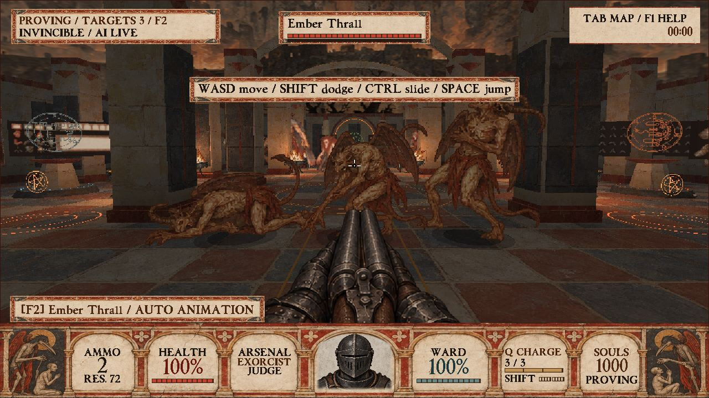
<figcaption><b>Rys. 20.</b> Trzy stopnie utraty równowagi w silniku gry. Od lewej: przewrócenie (namalowane klatki upadku, demon wstaje w ostatnich 0,15 s), ciężkie zachwianie (klatka odrzutu, potem ból) i lekkie zachwianie (drgnięcie w miejscu).</figcaption>
</figure>

<section class="col" id="s16">
<h2><span class="n">16</span>Baza pod rozbudowę</h2>
<p>Gra ma kiedyś mieć więcej demonów, umiejętności i broni. Dlatego w 0.24 przebudowałem miejsca, w których nowa treść wymagała dopisywania kodu w kilku plikach:</p>
</section>
<div class="tablewrap"><table>
<thead><tr><th>Element</th><th>Przed</th><th>Teraz</th></tr></thead>
<tbody>
<tr><td>Rodzaje ataków</td><td>Łańcuchy <code>if kind == …</code> w trzech funkcjach</td><td>Rejestr <code>Attacks.kinds</code>: jeden wpis na rodzaj z funkcjami <code>commit</code>, <code>aim</code>, <code>execute</code>, <code>strike</code>, <code>duration</code>, flagą <code>unseen</code> i listą wymaganych pól</td></tr>
<tr><td>Kontry i podcięcia</td><td>Lista rodzajów (lunge, leap, charge) wpisana w reguły i w strzał</td><td>Każdy atak z ruchem zapisuje prędkość biegu, a reguły czytają tylko ją</td></tr>
<tr><td>Bronie</td><td>Parametry strzału w gałęziach <code>if strong</code></td><td>Pole <code>attack</code> w danych broni i glify jako modyfikatory <code>set</code> / <code>scale</code></td></tr>
<tr><td>Fale</td><td>Stała rotacja pięciu nazw: nowy demon nigdy by się nie pojawił</td><td>Najpierw rotacja, potem każdy inny rodzaj w stałej kolejności; budowniczy fal dostępny dla przyszłych danych spotkań</td></tr>
<tr><td>Ciała</td><td>Część stałych w kodzie reguł</td><td>Wszystko w danych ciała lub w <code>defaults</code>: stabilność, zaparcie, stopnie zachwiania, tarcza, nietykalność, tarcie</td></tr>
<tr><td>Kontrola</td><td>Błąd w danych wychodził dopiero w grze</td><td>Test schematu (<code>tests/cases/content_schema.lua</code>) sprawdza każde stworzenie, atak, broń i falę: wymagane pola rodzaju, unikalne nazwy, pakiety, zasadę „każdy demon wolniejszy od rycerza” i ciągłość stopni zachwiania</td></tr>
</tbody></table></div>
<section class="col">
<p>Nowy demon to teraz wpis w <code>content/enemies.lua</code> i atlas grafiki. Jeśli używa istniejących rodzajów ataków, nie trzeba dopisywać kodu. Nowy rodzaj ataku to jeden wpis w rejestrze. Test schematu od razu pokaże brakujące pole.</p>
<p>Strzał też czyta już tylko dane: pole <code>fire</code> broni (naboje na pociągnięcie, śruciny, pola zamka i gotowości, dźwięk, błysk, dym, automatyczne przeładowanie). <code>combat.lua</code> nie rozróżnia już strzelby i rewolweru. <b>Następny krok:</b> samo przeładowanie (<code>reload.lua</code>) nadal zna dwa mechanizmy. Kolejnym rejestrem powinny być rodzaje mechanizmu broni (łamana, bębenkowa, magazynkowa). Umiejętności gracza (ładunek prochowy) warto opisać tym samym schematem co ataki demonów: pakiet, zapowiedź, rodzaj.</p>
</section>

<section class="col" id="s17">
<h2><span class="n">17</span>Wnioski</h2>
<ol>
<li>Model walki jest spójny: jeden potok trafienia, jedno prawo impulsu, jedna reguła gardy dla wszystkich ciał, gracz pod tymi samymi zasadami co demony. Po 0.24 w kodzie reguł nie ma już ukrytych stałych. Wszystkie liczby są danymi ciała lub danymi domyślnymi.</li>
<li>Fizyka jest niezależna od liczby klatek i zachowuje pęd. Zderzenia nie tworzą energii.</li>
<li>Progi projektowe (rany, zabójstwa jednym strzałem) mają jawne marginesy i testy.</li>
<li>AI nie zapętla już ataków. Każdy demon ma odpowiedź na krążącego gracza.</li>
<li>Największe braki leżą w pętli rozgrywki: nagroda za agresję, tempo walki dopasowane do gracza i aktywna obrona. To kolejny krok, a pomiar trudności wymaga gry z człowiekiem.</li>
</ol>
</section>

<section class="col" id="a1">
<h2>Dodatek A. Wszystkie stałe modelu</h2>
<p>Wartości domyślne z <code>defaults</code> w <code>content/enemies.lua</code>. Ciało może nadpisać każdą z nich.</p>
</section>
<div class="tablewrap"><table>
<thead><tr><th>Stała</th><th class="num">Wartość</th><th>Znaczenie</th></tr></thead>
<tbody>
<tr><td><code>impulse.vmax / scale</code></td><td class="num">6 m/s / 120</td><td>prawo impulsu (3)</td></tr>
<tr><td><code>regenDelay / regenRate</code></td><td class="num">1,2 s / 0,40</td><td>odbudowa gardy (10)</td></tr>
<tr><td><code>stagger.light</code></td><td class="num">0,16 + 0,14 r</td><td>lekkie zachwianie (9)</td></tr>
<tr><td><code>stagger.heavy</code></td><td class="num">od r = 1: 0,36 + 0,10 (r − 1), max 0,70 s</td><td>ciężkie zachwianie (9)</td></tr>
<tr><td><code>brace</code></td><td class="num">0,4</td><td>część pchnięcia przyjęta przy zapartych stopach</td></tr>
<tr><td><code>body.stability</code></td><td class="num">√m (bossowie 1,5)</td><td>dzielnik czasu zachwiania i przewrócenia</td></tr>
<tr><td><code>staggerLock</code></td><td class="num">1,15 s</td><td>blokada gardy po przełamaniu</td></tr>
<tr><td><code>counter</code></td><td class="num">0,5 m/s / 5,8 / 3,8 / 0,6</td><td>kontra (15): próg zbliżania, prędkość domyślna, garda na jednostkę pędu, limit</td></tr>
<tr><td><code>bossExposed / bossLock</code></td><td class="num">2 / 6 s</td><td>odsłonięcie i blokada bossa</td></tr>
<tr><td><code>zones.head.guard</code></td><td class="num">1,25</td><td>garda z głowy</td></tr>
<tr><td><code>zones.lower</code></td><td class="num">0,80 / 1,35 / 0,5</td><td>rana / garda / próg okulawienia</td></tr>
<tr><td><code>crippleTime</code></td><td class="num">1,5 s</td><td>okulawienie (ruch × 0,65)</td></tr>
<tr><td><code>tripImpact / knockdown</code></td><td class="num">40 / 0,45 s ÷ S</td><td>podcięcie i przewrócenie</td></tr>
<tr><td><code>interruptRecover / cancelPause</code></td><td class="num">0,35 / 1,2 s</td><td>powrót po przerwaniu, przerwa po anulowaniu</td></tr>
<tr><td><code>drag</code></td><td class="num">14 /s</td><td>tarcie demona (5)</td></tr>
<tr><td><code>hitPausePush / hitPause / killPause / woundPause</code></td><td class="num">36 / 0,025 / 0,06 / 0,07 s</td><td>zatrzymanie ofiary</td></tr>
<tr><td><code>breakKill.heal / window</code></td><td class="num">0,25 × garda / 2 s</td><td>leczenie za zabójstwo przełamanego i okno przełamania (15.1)</td></tr>
<tr><td><code>regenHealthShare</code></td><td class="num">0,5</td><td>odbudowa gardy zależna od zdrowia (15.4)</td></tr>
<tr><td><code>waves.director</code></td><td class="num">τ 8 s, 30, 0,6–1,6, +1</td><td>reżyser tempa (17)</td></tr>
<tr><td><code>player.body.perfectDodge</code></td><td class="num">+1 / 0,25 s / × 1,0 / 3,5 m</td><td>idealny unik: zwrot, zamrożenie, cios, zasięg (15.3)</td></tr>
<tr><td><code>woundTime</code></td><td class="num">0,55 s</td><td>oszołomienie ciężkiej rany</td></tr>
<tr><td><code>accel / brake</code></td><td class="num">16 m/s² / × 2</td><td>chód (11)</td></tr>
<tr><td><code>tiers</code></td><td class="num">0,05 / 0,08 / 0,06 / 0,12</td><td>prędkość / obrażenia / zdrowie / agresja (13)</td></tr>
<tr><td><code>tiers.attackers / lead</code></td><td class="num">2,2,3,3,4 / 0–1</td><td>tokeny, wyprzedzanie</td></tr>
<tr><td><code>slamSpeed / slamDamage / slamPoise</code></td><td class="num">3,2 m/s / 6 / 16</td><td>mur</td></tr>
<tr><td><code>collideSpeed / collidePoise</code></td><td class="num">2,6 m/s / 9</td><td>zderzenie (6)</td></tr>
<tr><td><code>fall</code></td><td class="num">g, 3, 8, 0,22, 3, 2,4, 0,22, 1,6</td><td>upadek ciała (8): grawitacja świata, opór, tarcie, podniesienie, odbicie</td></tr>
<tr><td><code>flinch</code></td><td class="num">1,5 / 420 / 18 / 80 / 7</td><td>sprężyna drgnięcia: impuls, sztywność, tłumienie, skala, zanik</td></tr>
<tr><td><code>player.body</code></td><td class="num">m 1,5, P 70, 0,5 s / 0,6</td><td>rycerz: masa, garda, odbudowa</td></tr>
<tr><td><code>player.body</code></td><td class="num">0,22–0,40 s, 0,55, 0,32 / 0,20 s, 9 / 3,5</td><td>oszołomienie, tarcza, nietykalność, tarcie</td></tr>
</tbody></table></div>

<section class="col">
<h2>Źródła w repozytorium</h2>
<ol class="refs">
<li><code>game/src/combat/rules.lua</code> — prawo impulsu, garda, reakcje, zderzenia, mury, gracz.</li>
<li><code>game/src/combat/damage.lua</code> — równanie obrażeń (1), spadek (2), tarcza (14).</li>
<li><code>game/src/physics/body_physics.lua</code> — tarcie (5), zderzenie niesprężyste (6).</li>
<li><code>game/src/enemies/ai.lua</code>, <code>actions.lua</code> — automat stanów, skok (12), wyprzedzanie, szarża.</li>
<li><code>game/src/content/enemies.lua</code>, <code>tuning.lua</code>, <code>weapons.lua</code> — wszystkie dane.</li>
<li><code>game/docs/ZMIANY-0.20.txt</code> … <code>ZMIANY-0.24.txt</code> — historia zmian i sprostowania.</li>
<li><code>work/qa-v23/</code> — <code>ai-audit.txt</code>, <code>DURABILITY-REVIEW.txt</code>, <code>playtest-human.txt</code>, <code>test-results.txt</code>, zrzuty renderera.</li>
</ol>
</section>
</main>

<script>
window.MathJax={tex:{inlineMath:[['\\(','\\)']],displayMath:[['\\[','\\]']]},svg:{fontCache:'global'},options:{enableMenu:false}};
</script>
<script src="https://cdn.jsdelivr.net/npm/mathjax@3.2.2/es5/tex-svg.js" async></script>
<script>
(function(){
  var NS='http://www.w3.org/2000/svg';
  function el(tag,attrs,parent){var e=document.createElementNS(NS,tag);for(var k in attrs)e.setAttribute(k,attrs[k]);if(parent)parent.appendChild(e);return e}
  function fmt(v){return (Math.round(v*100)/100).toString().replace('.',',')}
  // One plotting helper: every chart shares scale, ticks and theme tokens.
  function plot(id,o){
    var W=640,H=330,L=52,R=16,T=14,B=44,host=document.getElementById(id);if(!host)return;
    var svg=el('svg',{viewBox:'0 0 '+W+' '+H,role:'img','aria-label':o.title||''},host);
    var sx=function(x){return L+(x-o.x[0])/(o.x[1]-o.x[0])*(W-L-R)};
    var sy=function(y){return H-B-(y-o.y[0])/(o.y[1]-o.y[0])*(H-T-B)};
    o.xt.forEach(function(x){el('line',{x1:sx(x),x2:sx(x),y1:T,y2:H-B,class:'grid'},svg);var t=el('text',{x:sx(x),y:H-B+16,'text-anchor':'middle'},svg);t.textContent=fmt(x)});
    o.yt.forEach(function(y){el('line',{x1:L,x2:W-R,y1:sy(y),y2:sy(y),class:'grid'},svg);var t=el('text',{x:L-6,y:sy(y)+4,'text-anchor':'end'},svg);t.textContent=fmt(y)});
    el('line',{x1:L,x2:W-R,y1:H-B,y2:H-B,class:'axis'},svg);el('line',{x1:L,x2:L,y1:T,y2:H-B,class:'axis'},svg);
    var xl=el('text',{x:(L+W-R)/2,y:H-8,'text-anchor':'middle'},svg);xl.textContent=o.xl;
    var yl=el('text',{x:12,y:(T+H-B)/2,'text-anchor':'middle',transform:'rotate(-90 12 '+(T+H-B)/2+')'},svg);yl.textContent=o.yl;
    (o.ref||[]).forEach(function(r){el('line',{x1:L,x2:W-R,y1:sy(r.y),y2:sy(r.y),class:'ref'},svg);var t=el('text',{x:W-R-4,y:sy(r.y)-5,'text-anchor':'end',class:'reflbl'},svg);t.textContent=r.label});
    o.series.forEach(function(s){var d='',n=200;for(var i=0;i<=n;i++){var x=o.x[0]+(o.x[1]-o.x[0])*i/n,y=s.f(x);y=Math.max(o.y[0],Math.min(o.y[1],y));d+=(i?'L':'M')+sx(x).toFixed(1)+' '+sy(y).toFixed(1)}
      el('path',{d:d,class:'ln',style:'stroke:'+s.c},svg)});
    (o.pts||[]).forEach(function(p){el('circle',{cx:sx(p.x),cy:sy(p.y),r:4.5,style:'fill:'+p.c},svg);var t=el('text',{x:sx(p.x)+7,y:sy(p.y)-7},svg);t.textContent=p.label});
  }
  var shove=function(J,m){return 6*(1-Math.exp(-J/120))/m};
  var fall=function(d,a,b,f){return 1-(1-f)*Math.max(0,Math.min(1,(d-a)/(b-a)))};
  plot('fig-falloff',{title:'Spadek mocy z odległością',x:[0,40],y:[0,1.05],xt:[0,4,12,18,24,36],yt:[0,0.25,0.4,0.65,1],xl:'odległość d [m]',yl:'f(d)',
    series:[{c:'var(--s2)',f:function(d){return d>24?0:fall(d,4,18,0.4)}},{c:'var(--s1)',f:function(d){return d>42?0:fall(d,12,36,0.65)}}]});
  plot('fig-armor',{title:'Udział obrażeń przez pancerz',x:[0,120],y:[0.4,1.02],xt:[0,30,60,90,120],yt:[0.4,0.6,0.8,1],xl:'rating pancerza A',yl:'100/(100+A(1-p))',
    series:[{c:'var(--s2)',f:function(a){return 100/(100+a*0.9)}},{c:'var(--s1)',f:function(a){return 100/(100+a*0.5)}},{c:'var(--s4)',f:function(a){return 100/(100+a*0.4)}}],
    pts:[{x:30,y:100/127,c:'var(--fg)',label:'Margrabia'},{x:60,y:100/154,c:'var(--fg)',label:'Żelazny (śrut)'},{x:60,y:100/130,c:'var(--fg)',label:'Żelazny (kula)'}]});
  plot('fig-shove',{title:'Prawo impulsu',x:[0,300],y:[0,6.2],xt:[0,25,55,108,160,240,300],yt:[0,1,2,3,3.2,4,5,6],xl:'impuls J',yl:'prędkość v [m/s]',
    ref:[{y:3.2,label:'próg muru 3,2 m/s'}],
    series:[{c:'var(--s1)',f:function(J){return shove(J,1)}},{c:'var(--s3)',f:function(J){return shove(J,1.4)}},{c:'var(--s4)',f:function(J){return shove(J,1.5)}},{c:'var(--s2)',f:function(J){return shove(J,1/0.12)}}],
    pts:[{x:240,y:shove(240,1),c:'var(--s1)',label:'salwa 20'},{x:25,y:shove(25,1),c:'var(--s1)',label:'Sędzia'},{x:160,y:shove(160,1.5),c:'var(--s4)',label:'Furfur → gracz'}]});
  // Equation (9): two tiers divided by stability; q = G / P.
  var DEM={l:[0.16,0.14],h:[0.36,0.10,0.70]},KN={l:[0.27,0.12],h:[0.37,0.08,0.49]};
  var stag=function(q,t,S){var r=Math.max(0,q-1);return (r<1?t.l[0]+t.l[1]*r:Math.min(t.h[2],t.h[0]+t.h[1]*(r-1)))/S};
  plot('fig-stagger',{title:'Czas zachwiania',x:[1,6],y:[0,0.65],xt:[1,2,3,4,5,6],yt:[0,0.1,0.2,0.3,0.4,0.5,0.6],xl:'G / P (zebrana garda / garda ciała)',yl:'t [s]',
    series:[{c:'var(--s1)',f:function(q){return stag(q,DEM,1)}},{c:'var(--s3)',f:function(q){return stag(q,DEM,Math.sqrt(1.4))}},{c:'var(--s4)',f:function(q){return stag(q,KN,Math.sqrt(1.5))}},{c:'var(--s2)',f:function(q){return stag(q,DEM,1.5)}}],
    pts:[{x:44/36,y:stag(44/36,DEM,1),c:'var(--s1)',label:'Sędzia → Sługa'},{x:3,y:stag(3,DEM,1),c:'var(--s1)',label:'9 śrucin'}]});
  var regen=function(t,g0,P,tau,rho){return t<tau?g0:Math.max(0,g0-(t-tau)*rho*P)};
  plot('fig-regen',{title:'Odbudowa gardy',x:[0,4],y:[0,65],xt:[0,0.5,1.2,2,3,4],yt:[0,15,30,45,60],xl:'czas od ciosu [s]',yl:'zebrana garda',
    series:[{c:'var(--s1)',f:function(t){return regen(t,30,36,1.2,0.4)}},{c:'var(--s4)',f:function(t){return regen(t,60,70,0.5,0.6)}}]});
  plot('fig-tier',{title:'Skalowanie poziomu',x:[1,5],y:[0,20],xt:[1,2,3,4,5],yt:[0,4,5.25,10,15,20],xl:'poziom t',yl:'wartość',
    ref:[{y:5.25,label:'bieg gracza 5,25 m/s'}],
    series:[{c:'var(--s1)',f:function(t){return 4*(1+0.05*(t-1))}},{c:'var(--s2)',f:function(t){return 15*(1+0.08*(t-1))}},{c:'var(--s3)',f:function(t){return 11.2*(1+0.06*(t-1))}},{c:'var(--s4)',f:function(t){return 10*(1+0.12*(t-1))}}]});

  // Hit calculator: equations (1)-(9) on the game's own data.
  var W={shotgun:{base:12,impact:12,push:12,pen:0.10,a:4,b:18,f:0.40,head:1.15,range:24},judge:{base:70,impact:44,push:25,pen:0.50,a:12,b:36,f:0.65,head:1.35,range:42}};
  // rush: the speed of the body's own rush toward the shooter (lunge, charge).
  var T={imp:{hp:112,armor:0,m:1,P:36,wound:0.45,S:1,rush:5.8},armored:{hp:170,armor:60,m:1.4,P:36,wound:0.40,S:Math.sqrt(1.4),rush:8.5,hyper:2},stolas:{hp:76,armor:0,m:1,P:30,wound:0.45,S:1,rush:0},buer:{hp:150,armor:0,m:1,P:50,wound:0.40,S:1,rush:0},boss:{hp:1000,armor:30,m:1/0.12,P:300,wound:1,boss:true,S:1.5,rush:0}};
  var Z={head:{d:1,g:1.25},torso:{d:1,g:1},lower:{d:0.8,g:1.35}};
  function $(i){return document.getElementById(i)}
  function tag(cls,txt){return '<span class="tag '+cls+'">'+txt+'</span>'}
  function calc(){
    var w=W[$('c-weapon').value],t=T[$('c-target').value],zn=$('c-zone').value,z=Z[zn],d=+$('c-dist').value,rush=$('c-rush').value==='rush';
    var n=$('c-weapon').value==='shotgun'?+$('c-pellets').value:1;
    $('o-dist').textContent=fmt(d)+' m';$('o-pellets').textContent=n;$('c-pellets').disabled=$('c-weapon').value!=='shotgun';
    var f=d>w.range?0:fall(d,w.a,w.b,w.f),head=zn==='head'?w.head:1;
    var dealt=n*w.base*f*head*z.d*100/(100+t.armor*(1-w.pen));
    var guard=n*w.impact*f*z.g,J=n*w.push*f;
    var kill=dealt>=t.hp,nsat=1-Math.exp(-J/120),v=shove(J,t.m),vk=kill&&!t.boss?v*(1.35+0.65*nsat):v;
    var u=rush?t.rush:0,Pe=t.P*(rush&&t.hyper?t.hyper:1);
    var mom=u>=0.5?Math.min(0.6*Pe,3.8*t.m*u):0,G=guard+mom;
    var broke=G>=Pe,q=G/Pe,heavy=broke&&q>=2,tS=stag(q,DEM,t.S);
    var after=u-v,stopped=u>=0.5&&after<=0;
    var moved=kill?'lot ciała':(u>=0.5?(stopped?'pęd odwrócony, odrzut '+fmt(-after)+' m/s':'bieg zwalnia '+fmt(u)+' → '+fmt(after)+' m/s'):fmt(v*(heavy?1:0.4)/14)+' m'+(heavy?'':' (zaparty, 40%)'));
    var out=[['obrażenia',fmt(dealt)+' / '+t.hp+' HP'],['garda',fmt(G)+' / '+fmt(Pe)+(mom?' (w tym pęd '+fmt(mom)+')':'')],['impuls J',fmt(J)],['pchnięcie',fmt(vk)+' m/s'+(kill&&!t.boss?' (rzut zabijający)':'')],['ruch',moved]];
    var flags=[];
    if(kill)flags.push(tag('bad','zabija'));
    else{
      if(rush&&u<0.5)flags.push(tag('ok','ten demon nie ma ataku z pędem'));
      if(broke){ if(t.boss)flags.push(tag('mid','zachwianie '+fmt(tS)+' s + odsłonięcie 2 s')); else flags.push(tag('mid',(heavy?'ciężkie':'lekkie')+' zachwianie '+fmt(tS)+' s'));}
      if(!t.boss&&((broke&&mom)||stopped))flags.push(tag('bad','przewrócenie '+fmt(0.45/t.S)+' s'));
      if(!t.boss&&dealt>=t.wound*t.hp)flags.push(tag('bad','ciężka rana 0,55 s'));
      if(zn==='lower'&&!t.boss&&guard>=0.5*t.P)flags.push(tag('new','okulawienie 1,5 s'));
      if(zn==='lower'&&u>=0.5&&guard>=40)flags.push(tag('new',t.boss?'szarża przerwana':'podcięcie'));
      if(!t.boss&&u<0.5&&v*(heavy?1:0.4)>3.2)flags.push(tag('new','uderzy o mur'));
    }
    if(!flags.length)flags.push(tag('ok','bez efektu'));
    $('c-out').innerHTML=out.map(function(r){return '<dt>'+r[0]+'</dt><dd>'+r[1]+'</dd>'}).join('')+'<div class="flags">'+flags.join('')+'</div>';
  }
  ['c-weapon','c-target','c-zone','c-dist','c-pellets','c-rush'].forEach(function(i){$(i).addEventListener('input',calc)});
  calc();
})();
</script>
